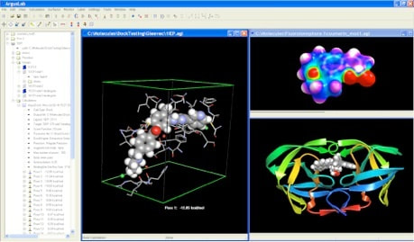

,
Chemical engineering (update 2024)
Basis computer programma's voor chemical engineering.
======================================================================================================================
Het is belangrijk dat een computer programma duidelijk geschreven is zodat de gebruiker er kan gebruik van maken als
basis van een groter geheel in haar of zijn research . Dit betekent dat de uitleg van de code zich bevindt in de body van de
"computercode" en begrijpbaar is in combinatie met een beperkte achtergrond van kennis over het beschouwde domein
( distillation,..... ).Naast basic programma's hebben we ook advanced programma's voor bepaalde topics.
topics : basis kennis van numerical methods ( verwijzingen naar wikipedia voor de beschouwde terminologie).
basis kennis van chemical thermodynamics (= chemische thermodynamica (= nl )).
basis kennis van logische structuren ( computer code : truebasic * = pseudocode in de ruimste zin van het woord ).
Opmerking: de Engelse en Nederlandse taal worden afwisselend door elkaar gebruikt.
Elke opmerking is welkom en elke bijdrage tot informatie of correctie.
support :prof.dr.Denis Constales
=====================================================================================
New topic : Rocket Science. (2018 -2019),MORE
New topic : Calculation :solutions ' acids and bases '. (2019)
New topic : Graph (pixel-user coord.) ,graphics (Maxima,Truebasic). (2019)
New topic : Electrochemistry (Maxima,Truebasic). (2019-2020)
New topic : Simple optimization (Maxima,Truebasic). (2019), math
New topic : Fluid dynamics (Maxima,Truebasic). (2019)
New topic : Electrical (Maxima,Truebasic). (2020),(scilab: xcos( =scicos)'
New topic : Control (Maxima,Truebasic). (2020-2021),(scilab: xcos( =scicos)'
New topic : BIOTECH (compartment mod.:COVID-19),maxima (2020)
= > vector field (2D-3D), Truebasic (plot) ,Maxima (plot),(2020-2021),new ,(21/01/2021,corrected)
New topic : PYTHON (2021),new , (25/04/2021,gui :tkinter,other)
New topic: chemical reaction engineering (Maxima,Truebasic). (10/10/2021)
New topic: fvm : finite volume method (Maxima,Python ). (2022-2023)
-------------------------------------------------------------------------------------------------------------------------------------------------------
New topic: react : reaction kinetics (Maxima,Python). (2023)
New topic: How to use :Delaunay,Voronoi ( ,Python). (2023)
New topic: Numerical Phenomena (Maxima,Python). (2023)
New topic: Physics (Maxima,Python). (2023)
--------------------------------------------------------------------------------------------------------------------------------------------------
update topic : programming (Maxima,Truebasic). (2019-2023)
update topic : Heat (Maxima,Truebasic). (2019,update 2021)
update topic : Mechanics ' Lagrangian' (Maxima,Truebasic). (2019)
update topic : How to solve chemical reaction equations (Maxima,Truebasic). (2019-2021),new,(01/08/2021)
update topic : Distillation ' Theoretical' (Maxima,Truebasic). (2020-2021),new ,(30/01/2021)
--------------------------------------------------------------------------------------------------------------------------------------------------------
SPECIAL TOPICS : 1e ) integral equation (2019),update
2e) ortho collocation method (2019-2020),new
3e) PDE : numerical (2020-2021) ,new,(26/01/2021)
4e) perturbation methods (2020) ,new
5e) infinite sum (=value) (2020) ,new
6e) linear pde first order,pP+qQ=R (2021) ,new,(18/05/2021),29/08/2021
7e) other (= finite element,fft) (2020-2021) ,new,(14/01/2021)
----------------------------------------------------------------------------------------------------------------------------------------------------------------------------------------
New 2022-2023
documents
Tensor
Levita-Civita symbol:Levi_Civita_symbol.pdf
free ebooks
Computational Fluid Dynamics
CFD :https://www.researchgate.net/publication/340038343_Essentials_of_CFD
toolbox : pde (Maxima)
https://github.com/emmanuelroque/pdefourier#laplace
toolbox : economic analysis (Maxima)
intro ned :https://feb.kuleuven.be/public/u0003131/
toolbox :https://home.csulb.edu/~woollett/eam.html
How to use:Delaunay,Voronoi : 2023
rem : python > *.txt , run , python : saved : *.py
new: 07/01/2023:python : How to plot delaunay from random points,version 1.0
download (python,code) :pythodelaunaytriangulationnumberingversion12023
download (fig,png ) :howtousedelaunayfig1version12023.
new: 07/01/2023:python : How to plot <delaunay,voronoi> from random points,subplot,version 1.0
download (python,code) :delaunaytriangulationnumberingpythonandvoronoisubplotversion12023
download (fig,png ) :phythondelaunayvoronoisubplotfig1version12023
Physics : 2023
orbit equation :differential equation -> result : polair equation
new: 26/12/2023:maxima : maxima: orbit equation , version 1.0
download (maxima,pdf) :maximatheoryversion12023.pdf
reaction kinetics : 2023
rem : python > *.txt , run , python : saved : *.py
reaction :aA+bB→cC+dD
new:15/01/2023:maxima : simple reaction > a*A+b*B -> c*C+d*D,version 1.0
download (maxima,code) :maximaaAplusbBtocCplusdDversion12023
reaction :nA →products
symbolic : no plot
new:16/01/2023:maxima : kinetics :reaction nA → productes, k,version 1.0
download (maxima,code) :maximanAtoproductstsymbolicversion12023
new:16/01/2023:python: sympy ,kinetics :reaction nA → productes, k,version 1.0
download (python,code ) :pythonsympynAtoproductsfordifferentnvesion12023
download (python,outp ) :pythonsympynAtoproductsfordifferentnvesion12023outp
numerical : plot
rem: list output and set
new:16/01/2023:python: simple reaction :1*A -> products,dnAdt = -k*(nA)**1 , no transition state,part 1,version 1.0
download (python,code ) :pythonkineticsnAtoproductsoutputlistofelementsversion12023part1
download (python,outp ) :pythonkineticsnAtoproductsoutputlistofelementsversion12023part1outp
reaction :2A=C,C=A+B
new: 02/01/2023:maxima : reaction kinetics:2A=C,C=A+B,version 1.0
download (maxima,code) :maximareactionkinetics2AequalCandCequalAplusBversion12023
download (maxima,code) :maximareactionkinetics2AequalCandCequalAplusBversion12023outp
new: 02/01/2023:python : reaction kinetics:2A=C,C=A+B,version 1.0
rem: how to use ivp "python",plot output
download (python,code) :pythonreact2aequalcandcequalaplusbversion12023
download (fig,png ) :fig1outpreactkinetic
new: 08/01/2023:python : reaction kinetics:2A=C,C=A+B,simple output:plot,version 1.0
rem: how to use odeint "python",plot output
rem: <<error :reaction(t,y) => correct:reaction(y,t)>>,differential equations for simulation
download (python,code) :pythonsimulationApluaACandCequalAplusBuseodeintversion1simple2023
download (fig,png ) :pythonsimulationApluaACandCequalAplusBuseodeintfigsimple
new: 08/01/2023:python : reaction kinetics:2A=C,C=A+B,table output:panda,tabulate,version 1.0
rem: how to use odeint "python",plot output,<< table : pandas,tabulate >>
rem: pip install pandas > use: code :import pandas as pd
rem: pip install tabulate > use: code :from tabulate import tabulate
rem: <<error :reaction(t,y) => correct:reaction(y,t)>>,differential equations for simulation
download (python,code) :pythonsimulationApluaACandCequalAplusBuseodeintversion1pandatabulate2023
download (python,outp ) :pythonsimulationApluaACandCequalAplusBuseodeintversion1pandatabulate2023outp
download (fig,png ) :pythonsimulationApluaACandCequalAplusBodeintfig
download (excel,csv ) : savedataset3.csv
download (excel,csv ) : savedataset4.csv
consecutive_reaction :A →B→C ,k[0],k[1] or k[1],k[2] or k1,k2
> symbolic:
new: 03/01/2023:maxima : consecutive_reaction (simple),version 1.0
rem: symbolic :{A(t),B(t),C(t)}
download (maxima,code) :maximamodelconsectivereactAtoBtoCk1k2version12023
new: 03/01/2023:python : consecutive_reaction (simple),version 1.0
rem: output (= plot),see above
download (python,code) :pythonthreeconsecutive reactionplotsymbol Ato Bto Ck1k2
download (fig,png ) :maximaconsecutiveABCfig
new: 07/01/2023:python : solve symbolic,sympy,consecutive reaction A>B>C(k1,k2),version 1.0
rem: sympy -> dsolve
download (python,code) :pythonsolvesdymbolicsympyconsecutivereactABCversion12023
download (python,outp) :pythonsolvesdymbolicsympyconsecutivereactABCversion12023outp
download (fig,png ) :pythonsympyconsecutivereactABCfigversion12023
> numerical:
new: 03/01/2023:python : consecutive_reaction (simple),version 1.0
rem: how to use odeint "python",plot output
new: 03/01/2023:python : consecutive_reaction (simple),version 1.0
rem: how to use odeint "python",plot output
download (python,code) :consectivereactionABCtestsimple
download (fig,png ) :consectiveABCsimplefig
new: 03/01/2023:python : consecutive_reaction (subplot,save),version 1.0
rem: how to use odeint "python",plot output
download (python,code) :consectivereactionABCtestsubplot
download (fig,png ) :consectiveABCsubplotfig
new: 03/01/2023:python : consecutive_reaction (subplot,save,open),version 1.0
rem: how to use odeint "python",plot output
download (python,code) :consectivereactionabctestsubplotsavetxtopentxt.txt
download (fig1,png ) :consectiveABCsubplotfigsave
download (fig2,png ) :consectiveABCsubplotfigopen
rate_reaction :A+H->B,r1;B+H->C,r2;C+H->D,r3
rem: lsq =least square method , matrix input
new: 03/01/2023:python and maxima:reaction rate (experimental),lsq ,version 1.0
ref1: youtube:https://www.youtube.com/watch?v=RW-4-Uu-Lm0
ref2: youtube:https://www.youtube.com/watch?v=ZmdDdZda720
download (maxima,code) :maximareactionrateexperimentallsqversion12023
new: 03/01/2023:python : reaction rate (experimental),lsq ,version 1.0
download (python ,code) :pythonreactionrateexperimentallsqversion12023
download (output,txt ) :pythonoutputreactionsystemlsqmethod
rate_reaction :A->B,k, with diffusion (=D), and advection (=u)
rem: use =TDMA , in python,tridiagonal systems
new: 28/01/2023:maxima : kinetics : -('diff(C,x,1))*u-C*k+('diff(C,x,2))*D=0,symbolic ,part 1,version 1.0
download (maxima,code) :maximafirstordertubularreactorwithaxialdispersionpart1version12023
new:28/01/2023:maxima : kinetics : -('diff(C,x,1))*u-C*k+('diff(C,x,2))*D=0,numerical,part 2,version 1.0
download (maxima,code) :maximafirstordertubularreactorwithaxialdispersionpart2version12023
new: 03/01/2023:python : kinetics : -('diff(C,x,1))*u-C*k+('diff(C,x,2))*D=0,numerical,part 3,version 1.0
download (python,code) :pythonsteadyreactionreactorforatobforabversion12023finalpart3
download (output,txt ) :pythonsteadyreactionreactorforatobforabversion12023finalpart3outp
download (fig1,png ) :pythonsteadyreactionreactorforatobforabversion12023finalpart3fig
new: 17/05/2023:maxima: reaction kinetics A-> B,stirred tank , process,version 1.0
download (maxima,code) :maximakineticsfromAtoBprocessversion12023final
appendix :
> -u*dC/dx+D*d/dx(dC/dx) = 0,Pe =u*L/D
new: 29/01/2023:maxima : appendix : kinetics: convection-diffusin ,-u*dC/dx+D*d/dx(dC/dx) = 0,version 1.0
download (maxima,code) :maximakineticsappconvecdiffusionversion12023
> symbolic :solve system of differential equations : maxima:desolve,python(=sympy):dsolve
new: 06/01/2023:maxima : appendix : system odes ,desolve & laplacetransform,version 1.0
download (maxima,code) :maximappendixsystemdiffeqandrellaplacetransfversion12023
new: 06/01/2023:python : appendix :How to solve :odes in sympy,check:solution,version 1.0
download (python,code) :sympysystemdiffeqwithdsolveversion12023
download (output,txt ) :sympysystemdiffeqwithdsolveversion12023outp
download (fig1,png ) :sympysystemodeversion12023
> numerical:algo "Runge Kutta"
new: 16/01/2023:python : appendix :principal use rk,version 1.0
download (python,code) :pythonsavesimplerk45howtousewithoutpararameterversion12023
download (fig1,png ) :rkwithoutparameterfi
new: 16/01/2023:python : appendix : simple reaction :n*y -> products,dy/dt = -k*(y)**n , rk45 ,version 1.0
download (python,code) :pythonsavesimplerk45howtousewithpararameterversion12023
download (fig1,png ) :rkfigwithparameter
new: 16/01/2023:python : appendix :python :x'(t)=x+y and y'(t) =2*x+y x0=1,y0=.4, solve rk2,version 1.0
download (python,code) :pythonrk2simulationsystemdiffeqsversion12023
download (fig1,png ) :rksystem2diffeqswithicfig1
download (fig2,png ) :rksystem2diffeqswithicfig2
programming
new: 15/03/2022:maxima : find automatic variables ,constant,%e,%i into expression,version 1.0
rem: listconstvars(expr),listdummyvars(expr),listofvars(expr),lfreeof (list, expr),freeof(expr,var)
download (maxima,code) :maximafindautomaticvariablesintoexprversion12022
download (maxima,code) :maximafindautomaticvariablesintoexprversion12022outp
new: 15/03/2022:maxima : position integral before sum or reverse,version 1.0
rem:simp:false,list,args,part,intosum,sumcontract
download (maxima,code) :maximaintegralsumandreverseversion12022
download (maxima,png ) :maximaintegralsumandreverseversion12022outp
new: 14/04/2022:maxima : programming , dot product ,use infix operator,version 1.0
rem:simp,declare,ratcoef,properties,remove,constp,matchfix
download (maxima,code) :maximaprogdotproductwithuseinfixoperaratorversion12022
download (maxima,png ) :maximaprogdotproductwithuseinfixoperaratorversion12022outp
new: 06/06/2022:maxima : programming , Implicit Sum (with kron_delta) and linear functions,version 1.0
rem:first matchdeclare follows by tellsimp or tellsimpafter declaration.
download (maxima,code) :maximaprogimplicitsumkroninsidelinearversion12022
download (maxima,png ) :maximaprogimplicitsumkroninsidelinearversion12022outp
new: 06/06/2022:maxima : programming , Implicit Sum (product with kron_delta) and linear functions,version 1.0
rem:first matchdeclare follows by tellsimp or tellsimpafter declaration.
download (maxima,code) :maximaprogsumproductkrondeltalinearsumversion12022
download (maxima,png ) :maximaprogsumproductkrondeltalinearsumversion12022outp
new: 06/06/2022:maxima : programming , integration unit_step,load(abs_integrate),version 1.0
rem:laplaceTransform computation (self) :load(abs_integrate) ,use with build in :unit_step(variable)
download (maxima,code) :maximaintegrateunitsteplaplacetrabsintegrateversion12022
download (maxima,png ) :maximaintegrateunitsteplaplacetrabsintegrateversion12022outp
new: 08/06/2022:maxima : programming use. showratvars,listofvars,args , version 1.0
rem:showratvars,listofvars,args (analysis : term in a expression)
download (maximan,code) :maxproglistofvarsshowratvarsargsversion12022
download (maximan,png ) :maxproglistofvarsshowratvarsargsversion12022outp
new: 09/06/2022:maxima : programming use. freeof command, version 1.0
rem:freeof, listofvars,showratvars,setify (= set),listify (=list),declare,noun.
download (maximan,code) :maxiprogcommandfreeofversion12022
download (maximan,png ) :maxiprogcommandfreeofversion12022outp
new: 09/06/2022:maxima : programming how to use freeof ,linearp,quadraticp,version 1.0
rem:freeof,matchdeclare,lambda,defmatch,and,or,ordergreat,ratsimp.
download (maxima,code) :maximaproghowtousefreeofversion12022
download (maxima,png ) :maximaproghowtousefreeofversion12022outp
new: 09/06/2022:maxima : programming block -,compound (statement),program,symbolic,version 1.0
rem: simpsum,listofvars,listdummyvars,showratvars,facsum,factor,endcons,
block statement (return),compound statements( = one line code).
download (maxima,code) :maximaprogblockcompoundstatementsymbolicversion12022
download (maxima,png ) :maximaprogblockcompoundstatementsymbolicversion12022outp
new: 11/06/2022:maxima : programming block -,compound (statement),program,symbolic,version 1.0a
rem: simpsum,listofvars,listdummyvars,showratvars,facsum,factor,endcons,
block statement (return),compound statements( = one line code),print,disp.
download (maxima,code) :maximaprogblockcompoundstatementsymbolicversion1a2022
download (maxima,png ) :maximaprogblockcompoundstatementsymbolicversion1a2022outp
new: 15/06/2022:maxima : programming matrix(subsample,submatrix,apply),version 1.0
rem:matrix,args,subsample,submatrix.
download (maxima,code) :maximaprogmatrixsubsamplesubmatrixversion12022.
download (maxima,png ) :maximaprogmatrixsubsamplesubmatrixversion12022outp
new: 17/06/2022:maxima : programming intersection,union ,version 1.0
rem:member,cons,endcons,setify,listify,first,second,rest,last,flatten
union(,),intersection(,),delete(,),firstn(,),lastn(,),setdifference(,).
download (maximan,code) :maximaprogintersectionunionversion12022
download (maximan,png ) :maximaprogintersectionunionversion12022outp
new: 24/06/2022:maxima : programming intersection,union ,version 1.0a
rem:support :prof.dr.Denis Constales
download (maxima,code) :maximaprogintersectionunionversion1a2022
download (maxima,png ) :maximaprogintersectionunionversion1a2022outp
new: 04/07/2022:appendix :maxima : recursion for ∩ and ∪, use unicode. version 1.0
rem:math -> maxima
download (maxima,code) :appendixmaximadenisunionintersectionunicodeversion12022
download (maxima,png ) :appendixmaximadenisunionintersectionunicodeversion12022outp
new: 20/06/2022:maxima:programming :problems with noun,verbify (unprotect :for evaluation with nouns),version 1.0
rem:problem :noun,verbify , "wxMaxima 22.04.00"
download (maxima,code) :maxmaprogverbifynounproblemevnounsversion12022
download (maxima,png ) :maxmaprogverbifynounproblemevnounsversion12022outp
new: 26/07/2022:maxima : programming :Binomial_theorem Newton,version 1.0
rem:expand,listofvars,polynomail(p),genmatrix,combinatiom,is.
download (maximan,code) :maximaprogbiniomvannewtonversion12022
download (maxima,png ) :maximaprogbiniomvannewtonversion12022outp
new: 27/07/2022:maxima : programming :Multinomial version 1.0
download (maximan,code) :maximaprogmultinomialversion12022
download (maxima,png ) :maximaprogmultinomialversion12022outp
Quantum Chemistry:
new: 26/05/2022:maxima : prefix operator, schrodinger equation in 1D ,version 1.0
rem:prefix
download (maximan,code) :maximaprefixoperatorschreq1Dversion12022
download (maximan,png ) :maximaprefixoperatorschreq1Dversion12022outp
Plot2D:
new: 06/06/2022:maxima : piecewise integration & piecewise plot (2D),version 1.0
rem:integration : integrate ,defint ( def = definite,int = integral)
download (maxima,code) :maximapiecewiseintplot2dversion12022
download (maxima,png ) :maximapiecewiseintplot2dversion12022outp
Analysis f(x):
new: 07/06/2022:maxima : analysis of function of (one variable, general = x,properties),version 1.0
rem:differentation,lambda,limit,zeros.
download (maxima,code) :maximafunctionanalysisonevariableversion12022
download (maxima,png ) :maximafunctionanalysisonevariableversion12022outp
Absolute integration f(x):
new: 11/07/2022:maxima :programming How to use load(abs_integrate),version 1,2022
rem:integrate,defint in combination package : load(abs_integrate)
download (maxima,code) :maximaabsoluteintegrateabsversion12022
download (maxima,png ) :maximaabsoluteintegrateabsversion12022outp
new: 22/07/2022:maxima : D operator use "introduction",version 1.0
rem:prefix,ode2,assume,psubst,solve,is.
download (maxima,code) :maximaodeDoperatorintroversion12022
download (maxima,png ) :maximaodeDoperatorintroversion12022outp
new: 18/08/2022:maxima : programming : DD operator with two arguments.version 1.0
rem:prefix,is,for,nouns.
download (maxima,code) :maximaprogrammingDDoperatortwoargversion12022
download (maxima,png ) :maximaprogrammingDDoperatortwoargversion12022outp
new: 01/12/2022:maxima : programming : use errcatch in if instruction ,version 1.0
rem:errcatch,is,errmsg, (if-then-else)
download (maxima,code) :maximaprogrammingerrcatchcommandifversion12022
download (maxima,png ) :maximaprogrammingerrcatchcommandifversion12022outp
new:16/02/2023:maxima : programming : my dot product (with use infix operator ="°"),version 1.0a,corrected
rem:infix,construct function.
download (maxima,code) :maximaprogrammingmydotproductandinfixoperatorversion1a2023
download (maxima,png ) :maximaprogrammingmydotproductandinfixoperatorversion12022outp
new:25/05/2023:maxima : programming : theoretical, simple code for find values f(x)=0,version 1.0
rem:sum,at,is,block,part.
download (maxima,code) :maximasprogsimplerootraphson2023version1
new:16/08/2023:maxima : programming : scalar product :dot and delta function,version 1.0
download (maxima,code) :maximaprogscalarproductdefine16082023version1
download (maxima,html ) :maximaprogscalarproductdefine16082023version1
new:17/08/2023:maxima : programming : combine scalar product and vector product,version 1.0
download (maxima,code ) :maximaprogcombinescalarandvectorproduct170823version1
download (maxima,html ) :maximaprogcombinescalarandvectorproduct170823version1
new:17/08/2023:maxima,python : programming : combine scalar product and vector product,version 2.0
rem:python use "sympy" packages,symbolic,Thonny
download (maxima,code ) :maximaprogcombinescalarandvectorproduct170823version2
download (maxima,html ) :maximaprogcombinescalarandvectorproduct170823version2
parse_string & eval_string : (load("stringproc") , computation with rule ,infix operator ),*.tex
new:24/10/2023:maxima,python : appendix "vector product evaluation with infix("##") operator",version 1.0 a
rem:infix("##").
download (maxima,code.pdf ) :maximaprogappendixvectorprodwithinfixoperatorversion1a2023final.pdf
math
new: 21/02/2022:maxima : Cauchysum explained with a proof.( exp(x)*exp(y)= exp(x+y) )
rem: double infinite sum (to) one infinite sum
download (maxima,code) :cauchysumwithaproof2022version1
download (maxima,png ) :cauchysumwithaproof2022version1outp.png
new: 23/02/2022:maxima : Taylor expansion one variable (symbolic ,discrete),version 1.0
rem : new symbolic notation used
download (maxima,code) :maximataylorwithonevarsymbdiscrete2022version1
download (maxima,png ) :maximataylorwithonevarsymbdiscrete2022version1outp
new: 25/02/2022:maxima : Taylor expansion two variable (symbolic ,discrete),version 1.0
rem : new symbolic notation used
download (maximan,code) :maximataylortwovariablessmbolicanddiscreetversion12022final
download (maximan,png ) :maximataylortwovariablessmbolicanddiscreetversion12022finaloutp
integral equations:
new: 10/03/2022:maxima : simple linear integral equation ( = exact),part 1,version 1.0
download (maxima,code) :maximasolvesimpleinteqexactpart1version12022
download (maxima,png ) :maximasolvesimpleinteqexactpart1version12022outp
new: 10/03/2022:maxima : simple linear integral equation ( = numerical),part 2,version 1.0
download (maxima,code) :maximasolvesimpleinteqnumericalpart2version12022
download (maxima,png ) :maximasolvesimpleinteqnumericalpart2version12022outp
ODE: discrete
new: 29/03/2022:maxima : population models,numeric,part1,version 1.0
download (maximan,code) :maximapopulationmodelapart1version12022
download (maximan,png ) :maximapopulationmodelapart1version12022outp
new: 08/04/2022:maxima : population models,numeric,part2,version 1.0
download (maximan,code) :maximapopulationmodelapart2version12022
download (maximan,png ) :maximapopulationmodelapart2version12022outp
ODE:
new: 10/03/2022:maxima : ode flowrate inside room minus flow rate outside room(= CO2),version 1,0
download (maxima,code) :maximaflowinminusflowoutcarbondioxideversion12022
download (maxima,png ) :maximaflowinminusflowoutcarbondioxideversion12022outp
ODE: nonlinear
new: 23/03/2022:maxima : nonlinear tank height(=elementary principles),version 1.0
rem : model : nonideal tank outflow (principles: mechanics,mass balance)
download (maxima,code) :maximanonlineartankheightversion12022
download (maxima,png ) :maximanonlineartankheightversion12022outp
new: 24/03/2022:maxima : nonlinear tank height(=elementary principles),version 1.0a
rem : integration : with use ode2(express,depentvariable,indepentvariable)
download (maxima,code) :maximanonlineartankheightversion1a2022
download (maxima,png ) :maximanonlineartankheightversion1a2022outp
Equations: quadratic forms :conic section
> parabola
new: 17/05/2022:maxima : example general quadratic form : parabola , version 1.0
download (maxima,code) :maximaparabolaexamplequadrformversion12022
download (maxima,png ) :maximaparabolaexamplequadrformversion12022outp
new: 18/05/2022:maxima : example general quadratic form : parabola , version 1.0a
download (maxima,code) :maximaparabolaexamplequadrformversion1a2022
download (maxima,png ) :maximaparabolaexamplequadrformversion1a2022outp
new: 17/05/2022:maxima : parabola given :sqrt(a*x)+sqrt(b*y)=1,version 1.0
download (maxima,code) :maxmaparabolasqrtaxplussqrtbyeq1version12022
download (maxima,png ) :maxmaparabolasqrtaxplussqrtbyeq1version12022outp
appendix : parabola ( y^2= 4*P*x, focus = (P,0))
new: 17/05/2022:maxima : appendix parabola y^2 = 4*P*x,version 1.0
download (maxima,code) :maximaparabolaappendixversion12022
download (maxima,png ) :maximaparabolaappendixversion12022outp
download (geogebra,code ) :geogebra-exportappendixparabola.ggb
download (geogebra,png ) :parabolaappendixyy4px.png
> ellipse ,hyperbola
new: 12/05/2022:maxima : computation of the asymptote of conic,version 1.0
download (maxima,code) :maximacompasymptoteconicvesion12022
download (maxima,png ) :maximacompasymptoteconicvesion12022outp
new: 12/05/2022:maxima : computation : asymptote & axes of a conic,other elements,version 1.0
download (maxima,code) :maximacompasymptoteaxesoftheconicvesion12022
download (maxima,png ) :maximacompasymptoteaxesoftheconicvesion12022outp
new: 13/05/2022:maxima : asymptotes computation without determinant(=quadratic form),version 1.0
download (maxima,code) :maximaasympwithoutdeterminantsquadraticformversion12022
download (maxima,png ) :maximaasympwithoutdeterminantsquadraticformversion12022outp
rem : include CHYP = conjugate hyperbola
new: 13/05/2022:maxima : asymptotes computation without determinant(=quadratic form),version 1.0a
download (maximan,code) :maximaasympwithoutdeterminantsquadraticconjugateformversion1a2022
download (maximan,png ) :maximaasympwithoutdeterminantsquadraticconjugateformversion1a2022outp
rem : example , simple curve fitting, comet approach around the sun.
new: 12/05/2022:maxima : comet approach the sun,problem:quadratic form,part1 version 1.0
download (maxima,code) :maximacometsunquadraticformsversion12022part1
download (maxima,png ) :maximacometsunquadraticformsversion12022part1outp
new: 12/05/2022:maxima : comet approach the sun,problem:quadratic form,part2 version 1.0
download (maxima,code) :maximacometsunquadraticformsversion12022part2
download (maxima,png ) :maximacometsunquadraticformsversion12022part2outp
Equations: inequalities
three methods : - load(solve_rat_ineq) :solve_rat_ineq(1-y*2<1)
- load(to_poly_solve) :to_poly_solve(abs(1-a*h)<1,h)
- load(fourier_elim) :fourier_elim([x + y < 1, x - y >= 8], [x,y])
new: 31/03/2022:maxima : programming inequality solution methods,version 1.0
download (maxima,code) :maximaprogrammingsolveinequalitiesversion12022
download (maxima,png ) :maximaprogrammingsolveinequalitiesversion12022outp
Equations: linear systems
youtube :https://www.youtube.com/watch?v=9tMDEEm-pJw&list=PLOROtRhtegr4HyXIIHKHketOm2k3JWSpK&index=16
rem : Gram-schmidt & upper triangle = decomposition
new: 08/04/2022:maxima : gram.schmidt and upper triangle: solve linear equations,version 1.0
download (maxima,code) :maximagrscmidtuppertrilinsystemversion12022
download (maxima,png ) :maximagrscmidtuppertrilinsystemversion12022outp
Equation: lines,segment.( coordinate geometry)
new:24/05/2022:maxima : family of lines trough the intersection of two lines,version 1.0
download (maxima,code) :maximafamilyoflinestroughintersectionbetweentwolinesversion12022
download (maxima,png ) :maximafamilyoflinestroughintersectionbetweentwolinesversion12022outp
download (geogebra,code ) :geogebraACUTEANGLE
download (geogebra,png ) :acuteanglebetween
constant:
Euler-Mascheroni constant = gamma = 0.57721....
new: 15/03/2022:maxima : Euler-Mascheroni constant,limit,difference,version 1.0
download (maxima,code) :maximaeulermasheroniconstversion12022
download (maxima,png ) :maximaeulermasheroniconstversion12022outp
tensor: (itensor)
new: 18/11/2022:maxima : triplevector product with itensor , version 1.0
download (maxima,code) :maximatriplerproductwithitensorversion12022
download (maxima,png ) :maximatriplerproductwithitensorversion12022outp
Gauss integral: (relation with gamma function )
new: 22/05/2023:maxima : tHow to use gamma function evaluation gauss function 0 to inf,version1.0
download (maxima,code) :howtousegammaforgaussintegralversion12023
Transform
fourier transform: "load(fourie)"
new:08/07/2022:maxima : use fourint and definition found ,version 1.0
use: definition: fourint ,
download (maxima,code) :maximafouriertransformrelationtopackagefourieversion12022
download (maxima,png ) :maximafouriertransformrelationtopackagefourieversion12022outp
appendix
new: 24/02/2022:maxima : integer partitions with two elements,setpartdif,version 1.0
rem : definition: "setpartdif(integer)
download (maxima,code) :maximaintegerpartitionsets2022
download (maxima,png ) :maximaintegerpartitionsets2022outp
new: 03/03/2022:maxima : trapezoidal rule,version 1.0
rem : definition: Area (Rectangle , Triangle,Trapezium)
download (maxima,code) :maximatrapezodialruleversion12022
download (maxima,png ) :maximatrapezodialruleversion12022outp
download (geogebra ,ggb ) :trapezoidalrule
download (Figure1 ,png ) :trapezoidalrule1
new: 10/03/2022:maxima : appendix: simpson1/3 rule for integration,version 1.0
download (maxima,code) :maximasimpson13ruleversion12022
download (maxima,png ) :maximasimpson13ruleversion12022outp
new: 10/03/2022:maxima :appendix :modified bernoulli polynomials, version 1,0
download (maxima,code) :maximamodifiedbernoullipolyversion1
download (maxima,png ) :maximamodifiedbernoullipolyversion1outp
Numerical phenomena
advection pde :diff(u,t)+c*diff(u,x) =0
new:20/02/2023:maxima : pde : general analysis advection pde :u't+c*u'x = 0,version 1.0,part 1
download (maxima,code) :maximapdeadvectiongeneralanalysisversion12023part1
download (maxima,png ) :maximapdeadvectiongeneralanalysisversion12023part1outp
new:20/02/2023:maxima : pde : general analysis advection pde :u't+c*u'x = 0,version 1.0,part 2
download (maxima,code) :maximapdeadvectiongeneralanalysisversion12023part2
download (maxima,png ) :maximapdeadvectiongeneralanalysisversion12023part2outp
new:20/02/2023:maxima : pde : general analysis advection pde :u't+c*u'x = 0,version 1.0,part 3
download (maxima,code) :maximapdeadvectiongeneralanalysisversion12023part3
download (maxima,png ) :maximapdeadvectiongeneralanalysisversion12023part3outp
nonlinear odes ode1:'diff(T,t,1)=Q(t)/(V*C[p]*ρ)+(F(t)*(T[i](t)-T))/V.stirred tank heater
ode2:''diff((V·ρ),t,1)=F[i]·ρ[i]-F·ρ.stirred tank heater,ρ =constant
balances : material & energy
new:01/02/2023:maxima : numerical phenomena,stirred tank heater,version 1.0
download (maxima,code ) :maximanumphenostirredtankhtheoreticalexplainodeversion12023
download (maxima,png ) :maximanumphenostirredtankhtheoreticalexplainodeversion12023outp
ode1:
new:01/03/2023:python : ode :numerical phenomena,stirred tank heater,version 1.0
solve : odeint ,python (simulation)
download (python,code ) :pythonnumphenostirredtankheaterintegodeintversion12023
download (python,png ) :outputphenostirredheattankerversion12023
download (python,outp ) :pythonnumphenostirredtankheaterintegodeintversion12023outp
ode1 & ode2: use twinaxes (python,explain)
new:01/03/2023:python : odes :numerical phenomena,stirred tank heater (Material,Energy),version 1.0
solve : odeint ,python (simulation)
download (python,code ) :pythonnumphenostirredtankheaterinteg2odeintversion12023
download (python,png ) :pythonnumphenostirredtankheaterinteg2odeintversion12023twinx
download (python,outp ) :pythonnumphenostirredtankheaterinteg2odeintversion12023outp
finite volume method (1D,2D)
uniform grid :
new:18/10/2022:maxima : convection -diffusion problem ((constraint =continuity equation)),version 1.0
download (maxima,code) :maximaconvdiffusionconstraintcontinuityeqversion12022
download (maxima,png ) :maximaconvdiffusionconstraintcontinuityeqversion12022outp
new:18/10/2022:maxima : convection -diffusion problem (exact : solution),version 1.0
download (maxima,code) :maximaconvdiffusionexactproblemversion12022
download (maxima,png ) :maximaconvdiffusionexactproblemversion12022outp
new:20/10/2022:maxima : fvm: code d(c)integrate(expr,var,lo,hi),version 1.0
download (maxima,code) :maximafvmdintegrateverison12022
download (maxima,png ) :maximafvmdintegrateverison12022outp
new:31/10/2022:maxima : fvm:general cv 2D steady heat conduction.(fourier law),finite difference & fvm,version 1.0
download (maxima,code) :maximafvmitwodsteadyheatcondgeneralcv2022version1
download (maxima,png) :maximafvmitwodsteadyheatcondgeneralcv2022version1outp
new:07/11/2022:maxima : fvm:1D, (Pe)clet number and exact solution difusion+convection (Γ=cts),version 1.0
download (maxima,code) :maximafvmpecletcellnumandexactversion12022
download (maxima,png) :maximafvmpecletcellnumandexactversion12022
new:07/11/2022:maxima : fvm:1D, (Pe)clet number and graph (from exact equation) (Γ=cts),version 1.0
download (maxima,code) :maximafvm1dpecletnumgraphexactversion12022
download (maxima,png) :maximafvm1dpecletnumgraphexactversion12022
non uniform grid :
new:09/11/2022:maxima : convection -diffusion problem (exact : solution),version 1.0
download (maxima,code) :maximaconvdiffusionexactproblemintegrationversion12022
download (maxima,png ) :maximaconvdiffusionexactproblemintegrationversion12022outp
new:10/11/2022:maxima : diffusion+source problem,a[p],a[E],a[W],b,version 1.0
download (maxima,code) :maximafvmconvdiffusionwithsourceversion12022
download (maxima,png) :maximafvmconvdiffusionwithsourceversion12022outp
new:10/11/2022:maxima : convection part no source problem,max function,version 1.0
download (maxima,code) :maximafvmconvectionwithoutsourceversion12022
download (maxima,png) :maximafvmconvectionwithoutsourceversion12022outp
new:11/11/2022:maxima : updintegrate for differential inside the differential ,version 1.0a
download (maxima,code) :maximafvmupdintegratefordifferentialversion1a2022
download (maxima,png) :maximafvmupdintegratefordifferentialversion1a2022outp
new:12/11/2022:maxima : :convection -diffusion relation peclet cell number (max :limit),version 1.0
download (maxima,code) :maximaconvdiffusionandrelationtopecletcelnumnversion12022final
download (maxima,png) :maximaconvdiffusionandrelationtopecletcelnumnversion12022finaloutp
new:16/11/2022:maxima : :simple formulation of 4 basic rules , 1D fvm (W,w,p,e,E) ,CV =[w,p,e],version1.0
download (maxima,code) :maximafvmfourbasicrules1DfvmWpEcontrolvolumes.version12022final
download (maxima,png ) :maximafvmfourbasicrules1DfvmWpEcontrolvolumes.version12022finaloutp
new:21/11/2022:maxima : :TVD framework,find r, Ψ(r) , version 1.0
download (maxima,code) :maximafvmTVDframeworkschemeversion12022final1
download (maxima,png ) :maximafvmTVDframeworkschemeversion12022final1outp
new:26/11/2022:maxima : :implementation (TVD) for 1d convection-diffusion problem,version 1.0
download (maxima,code) :maximafvmimplementationTVDschemeversion12022
download (maxima,png ) :maximafvmimplementationTVDschemeversion12022outp
new:28/11/2022:maxima : double integration one dim.heat conduction (unsteady) with source =S,version 1.0a
download (maxima,code) :maximafvmappendixdoubleintegrationonedimheatconductwithsourceversion12022
download (maxima,png ) :maximafvmappendixdoubleintegrationonedimheatconductwithsourceversion12022outp
new:29/11/2022:maxima : heat conduction (unsteady),explicit,cank-nicolson,implicit no source (limit : Δt)
download (maxima,code) :maximafvmheatcondscheme3explcrnimplicitversion12022
download (maxima,png ) :maximafvmheatcondscheme3explcrnimplicitversion12022outp
new:14/12/2022:maxima : 2D convection-diffusion (start : general 1D transport equation), part 1, version 1.0
download (maxima,code) :maximaconvectiondiffusionequation2dtransporteq1dpart1version12022
download (maxima,png ) :maximaconvectiondiffusionequation2dtransporteq1dpart1version12022outp
new:14/12/2022:maxima : 2D convection-diffusion (start :discrete schema fvm), part 2, version 1.0
download (maxima,code) :maximaconvectiondiffusionequation2ddiscreteschemapart2version12022
download (maxima,png ) :maximaconvectiondiffusionequation2ddiscreteschemapart2version12022outp
new:16/12/2022:maxima : generalized relation convection-diffusion (Pe=Peclet) ,version1.0
download (maxima,code) :maximafvmgeneralcovdiffpecletcellnumversion12022
download (maxima,png ) :maximafvmgeneralcovdiffpecletcellnumversion12022outp
new:17/12/2022:maxima : generalized relation convection-diffusion (Pe=Peclet) ,version1.0a
download (maxima,code) :maximafvmgeneralcovdiffpecletcellnumversion1a2022
download (maxima,png ) :maximafvmgeneralcovdiffpecletcellnumversion1a2022outp
new:17/12/2022:maxima : CDS sheme (convection-diffusion) use A(Pe) & B(Pe) follows A(abs(Pe)),version 1.0
download (maxima,code) :maximafvmcdsschemeababsaversion12022
download (maxima,png ) :maximafvmcdsschemeababsaversion12022outp
new:17/12/2022:maxima : other schemes (convection-diffusion) for computation A(abs(Pe)),version 1.0
download (maxima,code) :maximafvmotherschemeaabspenumberversion12022
download (maxima,code) :maximafvmotherschemeaabspenumberversion12022outp
new:21/12/2022:maxima : nonuniform mesh diffusion 2D with sourc S, gauss divg theorema,version 1.0
download (maxima,code) :maximafvm2ddiffsourcenonuniformgaussdivgversion12022
download (maxima,png ) :maximafvm2ddiffsourcenonuniformgaussdivgversion12022outp
new:21/12/2022:maxima : nonuniform mesh diffusion 2D with sourc S, gauss divg theorema(J[q] flux,LHS wall),version 1.0
download (maxima,code) :maximafvm2ddiffsourcenonuniformlhswallgaussdivgversion12022
download (maxima,png ) :maximafvm2ddiffsourcenonuniformlhswallgaussdivgversion12022outp
polair coordinates
new:26/12/2022:maxima : polair coordinates (cilindrical),grad,diffusion+S(=source) "version 1.0"
download (maxima,code) :maximafvmpolarcoorcinlindricalgradversion12022
download (maxima,png ) :maximafvmpolarcoorcinlindricalgradversion12022outp
Non- Orthogonal Meshes
new:27/12/2022:maxima : non-orthogonal mesh ,between two cells { p[0],p[1]},version 1.0
download (maxima,code) :maximafvmnonorthogonalmeshversion12022
download (maxima,png ) :maximafvmnonorthogonalmeshversion12022outp
new:04/02/2023:maxima :non regular grid ( non-orthogonal,grid =triangles),diffusion flux output ,version 1.0
download (maxima,code) :maximafvmappnonregulargriddiifffluxversion12023
download (maxima,png ) :maximafvmappnonregulargriddiifffluxversion12023outp
new:10/03/2023:maxima :unstructed-grids (Triangles), n.grad(Φ) =∂Φ/∂n,version 1.0
download (maxima,code) :maximafvmunstructedgriddotprngradphiversion12023
download (maxima,png ) :maximafvmunstructedgriddotprngradphiversion12023outp
algo :(maxima)
new:10/02/2023:maxima : fvm:simple algo.1D steady (semi-implicit method for pressure linked equation), version 1.0
download (maxima,code) :maximafvmsimplealgo1dsteadypressurelinkedversion1
download (maxima,png ) :maximafvmsimplealgo1dsteadypressurelinkedversion1outp
example :(python)
rem : python > *.txt , run , python : saved : *.py
new:19/12/2022:maxima : diffusion+source =0,example:1,BC,,a[p],a[E]a[W],b,version 1.0
download (maxima,code) :maximafvmdiffusionwithsourcevvbexample1BCversion12022
download (maxima,png ) :maximafvmdiffusionwithsourcevvbexample1BCversion12022outp
new:08/02/2023:maxima : fvm:how to use simple algorithme (example: 2). version 1.0
download (maxima,code) :maximafvmexample2usesimplealgoversion120223final
download (maxima,png ) :maximafvmexample2usesimplealgoversion120223finaloutp
new:10/02/2023:maxima : fvm : example 3:1d momentum equation, 1d continuity equation,pipeflow,version 1.0
download (maxima,code) :maximafvmexample3moment1dcont1dversion12023
download (maxima,png ) :maximafvmexample3moment1dcont1dversion12023outp
youtube : https://www.youtube.com/watch?v=N85HmIIgm4s&t=1333s
new:10/02/2023:python : fvm : example 3:1d momentum equation, 1d continuity equation,pipeflow,version 1.0
download (python,code) :pythonfvmexample3contmomentum1dpipeflowversion12023
download (python,outp ) :pythonfvmexample3contmomentum1dpipeflowversion12023outp
new:10/02/2023:python : fvm : example 3:1d momentum equation, 1d continuity equation,pipeflow,tabulate,version 1.0
download (python,code) :pythonfvmexample3contmomentum1dpipeflowversion12023tabulate
download (python,outp ) :pythonfvmexample3contmomentum1dpipeflowversion12023tabulateoutp
youtube :https://www.youtube.com/watch?v=xPnzJ4gt9eE
download (matlab,code) :matlabsimpleexampleforsimplealgo1d
new:13/02/2023:python : fvm : example 3:1d momentum equation, 1d continuity equation,pipeflow,new code,version 1.0
download (python,code) :pythonfinalsimplealgofinalminversion12023final.
new:13/02/2023:python : fvm : example 3:1d momentum equation, 1d continuity equation,pipeflow,new code,version 1.0
download (python,code) :pythonfinalsimplealgofinalplotandtabulatefinalresultsinandoutcsvfinalnewcodeverssion12023
download (python,outp ) :pythonfinalsimplealgofinalplotandtabulatefinalresultsinandoutcsvfinalnewcodeverssion12023outp
download (python,fig ) :pythonnewcodeexample3figure1
download (excel,csv file ) :results.csv
new:16/02/2023:python : fvm : example 4:1d,more cells,use simple algo,version 1.0
download (maxima,code) :maximafvm1dmorecellssimplealgoversion12023
download (maxima,png ) :maximafvm1dmorecellssimplealgoversion12023outp
new:17/02/2023:python : fvm : example 5, 2d simple algorithm ,version 1.0
download (maxima,code) :maximafvmexample52dsimplealgoversion12023
download (maxima,png ) :maximafvmexample52dsimplealgoversion12023outp
----------------------------------------------------
new:19/10/2022:maxima : appendix : fvm : integration of differential , version 1.0
download (maxima,code) :maximacommandappendixfvmantidantidiffintegrateversion12022
download (maxima,png ) :maximacommandappendixfvmantidantidiffintegrateversion12022outp
new:20/10/2022:maxima : appendix : fvm : first order ,finite difference (central,forward,backward),version 1.0
download (maxima,code) :maximataylorfvmfinitedifferenceversion12022
download (maxima,png ) :maximataylorfvmfinitedifferenceversion12022outp
new:20/10/2022:maxima : appendix : fvm : second order ,finite difference (central),version 1.0
download (maxima,code) :maximataylorfvmsecorderdifffinitedifferenceversion12022
download (maxima,png ) :maximataylorfvmsecorderdifffinitedifferenceversion12022outp
new:21/10/2022:maxima : appendix : fvm : steady equation for (convection(=lhs),diffusion(=rhs)),version 1.0
download (maxima,code) :appendixmaximaintegrationofconvdiffusionequationversion12022
download (maxima,png ) :appendixmaximaintegrationofconvdiffusionequationversion12022outp
new:21/10/2022:maxima : appendix : fvm : tridiagonal system (algo:Thomas),version 1.0
download (maxima,code) :appendixmaximafvmtridiagonalversion12022
download (maxima,png ) :appendixmaximafvmtridiagonalversion12022outp
new:31/10/2022:maxima : appendix : fvm : Grid generation for CV in 1D,version 1.0
download (maxima,code) :gridgenerationdirectionxversion12022
download (maxima,png) :gridgenerationdirectionxversion12022outp
new:31/10/2022:maxima : appendix : fvm : integration of differential nd order( higher order differential), version 1.0
download (maxima,code) :maximappendixfvmhowtointegratedifferentialhigherorderndversion12022final
download (maxima,png) :maximappendixfvmhowtointegratedifferentialhigherorderndversion12022finaloutp
new:31/10/2022:maxima : appendix : fvm : stencil for finite volume method 2D (heat),version 1.0
download (maxima,code) :maximarfvmappendixstencilforfvm2dversion12022final
download (maxima,png) :maximarfvmappendixstencilforfvm2dversion12022finaloutp
new:01/11/2022:maxima : appendix : fvm : matrix plot for 3d coordinates (or 2D image,or impulses),version 1.0
download (maxima,code) :maximafvmappendixmatrixplot3dimage2dimpulsesversion12022
download (maxima,png) :maximafvmappendixmatrixplot3dimage2dimpulsesversion12022outp
new:01/11/2022:maxima : appendix : fvm : integral gauss divergence theorema ,version 1.0
download (maxima,code) :maximafvmappendixintegralgausstheoremversion12022
download (maxima,png) :maximafvmappendixintegralgausstheoremversion12022outp
new:03/11/2022:maxima : appendix : fvm : Dirichlet BC applied (=left boundary),version 1.0
download (maxima,code) :maximafvmappendixdirichletbcleftversion12022
download (maxima,png) :maximafvmappendixdirichletbcleftversion12022outp
new:03/11/2022:maxima : appendix : fvm : Dirichlet BC applied (=right boundary),version 1.0
download (maxima,code) :maximafvmappendixdirichletbcrighttversion12022
download (maxima,png) :maximafvmappendixdirichletbcrighttversion12022outp
convection term : 1D transport equation
new:04/11/2022:maxima : appendix : fvm : upwind-scheme Φ[w],version 1.0 when(u>0,u<0),version 1.0
download (maxima,code) :maximafvmappupwindup2down1phiwversion12022
download (maxima,png) :maximafvmappupwindup2down1phiwversion12022outp
new:04/11/2022:maxima : appendix : fvm : upwind-scheme Φ[e],version 1.0 when(u>0,u<0),version 1.0
download (maxima,code) :maximafvmappupwindup2down1phieversion12022
download (maxima,png) :maximafvmappupwindup2down1phieversion12022outp
new:04/11/2022:maxima : appendix : fvm : quickscheme Φ[w],version 1.0 when(u>0,u<0),version 1.0
download (maxima,code) :maximafvmappquickschemeup2down1phiwversion12022
download (maxima,png) :maximafvmappquickschemeup2down1phiwversion12022outp
new:04/11/2022:maxima : appendix : fvm : quickscheme Φ[e],version 1.0 when(u>0,u<0),version 1.0
download (maxima,code) :maximafvmappquickschemeup2down1phieversion12022
download (maxima,png) :maximafvmappquickschemeup2down1phieversion12022outp
new:11/11/2022:maxima : appendix : fvm : updintegrate function build for differential inside the differential ,version 1.0
download (maxima,code) :maximafvmfunctionneedupdintegrateversion12022
download (maxima,png) :maximafvmfunctionneedupdintegrateversion12022outp
new:26/11/2022:maxima : appendix : fvm : lineintegral (2D)conversion surface integral (2D) ,version 1.0
download (maxima,code) :maximafvmappendixgreentheorem2dversion12022
download (maxima,code) :maximafvmappendixgreentheorem2dversion12022outp
new:26/11/2022:maxima : appendix : fvm :lineintegral definition(parametric),example :"circle area",version 1.0
download (maxima,code) :maximafvmappendixlineintegral2dversion12022
download (maxima,code) :maximafvmappendixlineintegral2dversion12022
new:27/11/2022:maxima : appendix : fvm : ,double integration (time,cv) for time differential (part 1),version 1.0
download (maxima,code) :maximafvmappendixdoubleintegrationtimediffpart1version12022
download (maxima,code) :maximafvmappendixdoubleintegrationtimediffpart1version12022outp
new:28/11/2022:maxima : appendix : fvm : ,double integration (time,cv) for diffusion term (part 2),version 1.0a
download (maxima,code) :maximafvmappendixdoubleintegrationofdiffusiontermpart2version1a2022.
download (maxima,code) :maximafvmappendixdoubleintegrationofdiffusiontermpart2version1a2022outp
new:29/11/2022:maxima : appendix : fvm : how to solve : inequalities,two methods,version 1.0
download (maxima,code) :maximafvmappendixsolveineq2methodsversion12022
download (maxima,code) :maximafvmappendixsolveineq2methodsversion12022outp
new:15/12/2022:maxima : appendix : fvm : exponential scheme "1D -convection-diffusion,u > 0 ",version 1.0
download (maxima,code) :maximafvmappexpscheme1convdifversion12022
download (maxima,png) :maximafvmappexpscheme1convdifversion12022outp
new:15/12/2022:maxima : linearized exponential scheme (=hybrid scheme,a[E]/D[e]) part1,version 1.0
download (maxima,code) :maximafvmappendixlinerizedexpschemehybidversion12022aepart1
download (maxima,png) :maximafvmappendixlinerizedexpschemehybidversion12022aepart1outp
new:15/12/2022:maxima : linearized exponential scheme (=hybrid scheme ,a[W]/D[w]) part 2,version 1.0
download (maxima,code) :maximafvmappendixlinerizedexpschemehybidversion12022awpart2
download (maxima,png) :maximafvmappendixlinerizedexpschemehybidversion12022awpart2outp
new:16/12/2022:maxima : combine(a[E]/D[e],a[W]/D[w]),powerlaw, part 3,version 1.0
download (maxima,code) :maximafvmappcombineaeawpowerlawversion12022part3
download (maxima,png) :maximafvmappcombineaeawpowerlawversion12022part3outp
new:22/12/2022:maxima : my dot product (with use infix operator ="°"),version 1.0
download (maxima,code) :maximafvmappendixmydotproductandinfixoperatorversion12022
new:31/01/2023:maxima : maxima:fvm:appendix:index notation and patankar(1980),convection-diffusion,upwind,version 1.0
download (maxima,code) :maximafvmapppantankarindexupwindschemeversion12023
new:?/12/2022:maxima :
download (maxima,code) :
download (maxima,png ) :
analytical chemistry
new:19/03/2022:maxima : analytical chemistry ,species NaH2PO4,version 1.0
rem : definition: pH,pOH, use : eliminate
download (maxima,code) :maximaanalyticalchemnah2po4version12022
download (maxima,png ) :maximaanalyticalchemnah2po4version12022outp
new:20/03/2022:maxima : analytical chemistry ,species NaH2PO4,version 1.0a
download (maxima,code) :maximaanalyticalchemnah2po4version1a2022
download (maxima,png ) :maximaanalyticalchemnah2po4version1a2022outp
control design
new:30/05/2022:youtube (external),all
rem : block diagram reduction.
Introduction to Block Diagrams :https://www.youtube.com/watch?v=IqxJpaKuQGo
Block Diagram Reduction Rules - Part 1 :https://www.youtube.com/watch?v=t_k7oRICmWo
Block Diagram Reduction Rules - Part 2 :https://www.youtube.com/watch?v=iLSb89PK_ec
Block Diagram Reduction (Solved Problem 1):https://www.youtube.com/watch?v=p8WzG3rM9HY
Block Diagram Reduction (Solved Problem 2):https://www.youtube.com/watch?v=bk5Lmk-mr-I
Block Diagram Reduction (Solved Problem 3):https://www.youtube.com/watch?v=5dJCEiGrJkE
Block Diagram Reduction (Solved Problem 4):https://www.youtube.com/watch?v=aIQkm75f6fU
appendix :
new: 31/05/2022:maxima :: appendix: integral transform : Laplace Transform ,version 1.0
download (maximan,code) :maximaappendixintegraltrlaplacetransfversion12022
download (maximan,png ) :maximaappendixintegraltrlaplacetransfversion12022outp
software
python and jupyter notebook :
new: 18/09/2022:python : How install : jupyter notebook ( version python from your choice),1.0
download (jupyter,txt) :installyupyternotebookonyourversionpython
download (jupyter,PDF) :installyupyternotebookonyourversionpython
new: 19/09/2022:python : How install : jupyter notebook ( version python from your choice),1.0a
download (jupyter,txt) :infoinstallpythonreleasewithjupyternotebookversion1a2022
download (jupyter,PDF) :infoinstallpythonreleasewithjupyternotebookversion1a2022pdf
new: 19/09/2022:python : How to install: packages in python (version 3.10),version 1.0
download (python,txt) :howinstallpackagespythonofyourchoiceinpython2022version1
download (jupyter,PDF) :howinstallpackagespythonofyourchoiceinpython2022version1pdf
new: 19/09/2022:jupyter : intial condition profile:rectangular wave,version 1.0
export as : jupyter notebook > html, other
download (html,output) :juyptterprofilerectangle2022python2022txtandoutp
-------------------------------------------------------------------------------------------------------
batch file : running task " = run jupyter notebook , default browser"
--------------------------------------------------------------------------------------------------------
use : batch file :startjupyternotebook.txt -=> startjupyternotebook.bat (rename)
new: 20/09/2022:python : batch file (startjupyternotebook.bat) for jupyter notebook version 1.0
download (batch,output) :startjupyternotebook
-------------------------------------------------------------------------------------------------------
batch file : running task " = run jupyter notebook , both browser "
--------------------------------------------------------------------------------------------------------
both browsers : firefox.exe,chrome.exe
local servers :
start firefox.exe "http://localhost:8888/tree"
start chrome.exe "http://127.0.0.1:8888/tree"
use : batch file :startjupyternotebook1.txt -=> startjupyternotebook1.bat (rename)
new: 20/09/2022:python : batch file (startjupyternotebook.bat) for jupyter notebook version 1.0a
download (batch,output) :startjupyternotebook1
run : jupyter notebook in google chrome and close : default browser
python and pycharm :
ref : How to use : random (calculation"Monte Carlo": pi,Borge Gobel)
download (pycharm) :https://www.jetbrains.com/pycharm/download/#section=windows
new: 22/08/2022:pycharm : How to install : How to use
download (txt) :installpycharmcommunityversion.txt
new: 22/08/2022:pycharm : first project : quadratic equation (*.txt > *.py)
download (python) :main1.txt
download (python,outp) :main1quadraticoutp
Error:try:,except:,else:,finally:
problem upload : send email.
new: 01/09/2022:python : simple error catching, input again ,version 1.0 (*.txt > *.py)
download (python) :pythonerroragainsystemversion1a2022txt
download (python,outp) :pythonerroragainsystemversion1a2022txtoutp
fixed point iteration (use while loop): x=g(x) =>cvg :abs (g'(x)) < 1
new: 31/08/2022:maxima: plot fixed point iteration :find intersection (two curves. sqrt(2)),cvg,version 1.0
rem : graphical solution (symbolic)
download (maxima) :maximafixedpiterationplotsqrt2cvggraphsolution12022
download (maxima,outp) :maximafixedpiterationplotsqrt2cvggraphsolution12022outp
new: 31/08/2022:maxima: programming , fixed point iteration (find :sqrt(2)),version 1.0
rem : while loop > out loop: return ("")
download (maxima) :maximafixedpointiterationfinalversion12022
download (maxima,outp) :maximafixedpointiterationfinalversion12022outp
new: 31/08/2022:python:programming ,fixed point iteration : sqr(2) ,version 1.0 (*.txt > *.py)
rem : while loop > out loop : break
download (python) :pythonfixedpointiterationsqr2version12022txt
download (python,outp) :pythonfixedpointiterationsqr2version12022txtoutp
new: 07/09/2022:maxima:plot staircase g(x) =x , version 1.0
staircase : "maxima command".
download (maxima) :maximaplotstaircaseversion12022
download (maxima,outp) :maximaplotstaircaseversion12022outp
new: 08/09/2022:maxima:plot staircase and evolution g(x) =x , version 1.0a
evolution : "maxima command".
download (maxima) :maximaplotstaircaseversion1a2022
download (maxima,outp) :maximaplotstaircaseversion1a2022outp
vibration ode : u"+w^2*u = 0 ,ic :u'(0) = r,u(0) =1 (solve : finite difference method :central difference)
new: 31/08/2022:maxima:intro to solve with python , ode(finite difference),version 1.0a
download (maxima) :maximaintrosolvewithpythonodefinitedifversion12022
download (maxima,outp) :maximaintrosolvewithpythonodefinitedifversion12022outp
new: 31/08/2022:python:intro to solve with python , ode(finite difference),version 1.0
numpy : import numpy as np , : example : np.linspace,np.zeros
matplotlib : import matplotlib.pyplot as plt : example : plt.plot(t,u,'r--'),plt.show()
download (python) :pythonintrosolvewithpythonodefinitedifversion12022txt
download (python,outp) :pythonintrosolvewithpythonodefinitedifversion12022txtoutp
download (spyder ,outp,png) :ipythonvibodeoutput
new: 07/09/2022:python: intial condition profile:rectangular wave,version 1.0
import numpy #here we load numpy
from matplotlib import pyplot #here we load matplotlib
download (python) :profilerectangle2022python2022txt.txt
download (python,doc,outp) :profilerectangle2022python2022txt.doc
new: 13/09/2022:pycharm: intial condition profile:rectangular wave,version 1.0
plt.plot :color = "green", linewidth = number # don't forget , plt.show()
import numpy #here we load numpy
from matplotlib import pyplot as plt
download (pycharm,code,outp) :pycharmprofilerectangle2022python2022txtandoutp.txt
download (pycharm,plot) :pycharmoutpplotreactangularwave.png
new: 08/10/2022:python: how to create mesh from scratch with Python
youtube :https://www.youtube.com/watch?v=Aua3eLpnGao&t=1858s
corrected :part
download (python,txt) :correctedpartdelaunay
corrected :solution ?
download (geogebra,pdf) :delaunayconstr.pdf
download (geogebra,png) :delanauyconstraint
iintro : class
intro :youtube
ref :Magic Methods in Python - Math methodsMagic Methods in Python - Math methods
new: 24/08/2022:python : part 1 : create class vec2d,simple use. (*.txt > *.py)
download (python) :pythonvec2dclasspart12022
download (python,outp) :pythonvec2dclasspart12022outp
new: 24/08/2022:python : part 2 : create class vec2d,add vectors. (*.txt > *.py)
download (python) :pythonvec2dclasspart22022
download (python,outp) :pythonvec2dclasspart22022outp
new: 24/08/2022:python : part 3 : create class vec2d,add vectors,scalar,combination (*.txt > *.py)
download (python) :pythonvec2dclasspart32022
download (python,outp) :pythonvec2dclasspart32022outp
? wrong result .part 3 , print(vec2d(1,2) ==vec2d(1,2)) , output : False
solve : overridding the equality method (part 4)
new: 24/08/2022:python : part 4 : create class vec2d,add vectors,scalar,equality (*.txt > *.py)
download (python) :pythonvec2dclasspart42202
download (python,outp) :pythonvec2dclasspart42202outp
representation : vec2d(x,y) -> vec2d(1,1)+vec2d(2,3) = vec2d(3,4)
new: 24/08/2022:python : part 5 : create class vec2d,add vectors,scalar,equality,represent (*.txt > *.py)
download (python) :pythonvec2dclasspart52022
download (python,outp) :pythonvec2dclasspart52022out
what about: 2*vec2d(x1,y1) - vec2d(x2,y2) = vec2d(x3,y3) ? xi,yi "floats" , i=1,2,3,...
solve : operator overloading (use python operators +,-,*) , " use : self,other "
def __repr__(self): # see: repr = representation
return "vec2d({},{})".format(self.x,self.y)
what about: 2*vec2d(x1,y1) - vec2d(x2,y2) = [x3,y3] ? xi,yi "floats" , i=1,2,3,...
solve : operator overloading (use python operators +,-,*) , " use : self,other "
def __repr__(self):
return str([self.x,self.y])
new: 26/08/2022:python : part 6 : create class vec2d,operator overloading (+,-,*),use "self.other"(*.txt > *.py)
download (python) :pythonvec2dclasspart62022
download (python,outp) :pythonvec2dclasspart62022outp
new: 26/08/2022:python : part 7 : create class vec2d,see:part 6,length of a vector,dot product (def outside class)(*.txt > *.py)
rem : outside class > working
rem : inside class > error : NameError for "length,dot"> solved : control python "case sensitive"
download (python) :pythonvec2dclasspart72022
download (python,outp) :pythonvec2dclasspart72022outp
rem :vec2d : x,y > extend vec3d:x,y,z (easy)
new: 29/08/2022:python : part 8 : implimentation @staticmethod in the class vec2d(*.txt > *.py)
consult :prof.dr.Denis Constales
download (python) :pythonvec2dclasspar872022
download (python,outp) :pythonvec2dclasspar872022outp
appendix
new: 26/08/2022:python : simple math classes numerical operations (*.txt > *.py)
download (python) :appendixsimplemathclassespython2022
download (python,outp) :appendixsimplemathclassespython2022outp
rem : __rmul__ :assume self rhs of the "*" operator , "example:2*vec2d(1,1)"
rem : __(r)mul__ > r => rhs
fortran and codeblocks :
download (codeblocks) :http://www.codeblocks.org/downloads/source/
new: 12/07/2022:codeblocks : How to install : gfortran.exe in codeblocks 20.03 of above
download (txt) : gfortran.txt
new: 12/07/2022:codeblocks : How compile : your first fortran program : Hello World
download (txt) :helloexample.txt
download (fortran) :main.f90
new: 13/07/2022:cmd : command prompt windows compile main.f90 (result :Hello World),output
rem :https://www3.ntu.edu.sg/home/ehchua/programming/cpp/gcc_make.html
download (txt) :compilehelloworldcmdprompt.txt
smath :smath solver+smath writer , windows
study :https://smath.com/?extensions=SMathStudio_Desktop,end of the html page
forum:https://en.smath.com/forum/
smath : How
to change reference handbook (smath solver)
new: 13/02/2022:smath : how to change reference handbook in smath
download (txt) :HowtochangerefbookinSmath
download (Pdf) :howtochangerefbookinsmath.pdf
smath : combination van smath (smath solver) & Maxima,unit computation
new: 13/02/2022:maxima : first session of smath
download (smath:*.sm) :myfirstsession05022022
download (Pdf) : myfirstsession05022022pdf
new: 13/02/2022:maxima :second session maxima takes over
download (smath:*.sm) :maximatakeover06022022
download (Pdf) :maximatakeover06022022pdf
new: 13/02/2022:maxima :simple 3D graphics (Smath & Maxima)
download (smath:*.sm) :simple3dgaphicsmaximafinal
download (Pdf) : simple3dgaphicsmaximafinal pdf
smath : import into smath writer:Menu > Insert > Mathcad Block
mathcad : analytical chemistry (zip files)
smath : matrix editor (combination of excel,libre office calc & writer,clipboard.....)
download (exe) :https://smath.com/wiki/Tools.ashx
use: go inside matrix,click rhs of the mouse ( copy,paste,clear,resize)
================================================================
rem:smath : import into smath writer:Menu > Insert > Maple
rem:smath : gui application ( smath writer)
rem:smath : *.sm ,save as : *.pdf
rem:smath : smath writer new part of smath studio
================================================================
*.sm ,save as : *.pdf,*.smz,*.tex,*xls(x),*.odt,*.html,*.jpg
*.svg,*.exe,*.xmcd
================================================================
reduce :computer algebra system
study :https://reduce-algebra.sourceforge.io/tutorials.php
forum:https://reduce-algebra.sourceforge.io/documentation38.php ,packages
book :https://link.springer.com/book/10.1007/978-94-011-3502-3 (prof.dr.Denis Constales)
smath : How to run reduce with use win-reduce (version 3.0),windows
new: 15/02/2022:reduce : how to use the easyway (cas : software ,other packages than Maxima)
download (txt) :howtorunreduceversioncsl
download (pdf) :howtorunreduceversioncslpdf
download (png) :finalrunreduce3.png configure reduce template
=================================================================
appendix : complex variable ( inverse laplace transform = ilt),(2019).
--------------------------------------------------------------------------------------------------------------------
edu:calculus: (important topics),(2019-2021),Dirac Delta Function,Hamiltonian Function,
Legendre Transformation, ODE ( infinite sum),f(x),zf(x,y):tangent (line,plane), normal line
edu:matrix : (important topics),(2019-2020)
==================================================================
new version : Maxima5.46-Windows,2022 ,modelling tools : info,maxima (pdf) : ref card
--------------------------------------------------------------------------------------------------------------------------------------------
personalia
=========
email :[email protected]
old website : petervlas.50megs.com
linkedin :https://www.linkedin.com/in/peter-vlasschaert-4143806
-------------------------------------------------------------------------------------------------------------
Opmerking: Update Website : (05/01/2024)
==============================================================
New topic : PYTHON(maxima ?) (2021)
=================================
download :https://www.python.org/
oneline version :http://pythontutor.com/visualize.html#mode=edit
programming:tutorial :https://www.w3schools.com/python/default.aspdefault
tutorial :https://www.programiz.com/python-programming
The Easiest Way to Run Python(=Python 3.7 built in):https://thonny.org/
Start :https://www.youtube.com/watch?v=nwIgxrXP-X4
Package:importpackagesinthonny.txt
Test :importpackagesinthonnytest.txt
============================================================
tutorial :https://www.youtube.com/watch?v=yuoSKkSEhQg&list=PL6lxxT7IdTxGoHfouzEK-dFcwr_QClME_
Gui Builder : GUI drag & drop style GUI Builder for Python Tkinter
start(tkinter) : 'default: installed 3.x'
=> general:
new: 14/03/2021:python :full windowscreen : maximum pixels (tkinter,*.txt=>*.py )
download (Phyton,code) :tkfullscreen14032021
download (Phyton,png) :tkfullscreen14032021outp.png
new: 19/03/2021:python :Hexadecimal representation of a color (version 1.0) (tkinter,*.txt=>*.py )
download (Phyton,code) :colorhexadecimalpython19032021
download (Phyton,png) :colorhexadecimalpython19032021outp
new: 24/04/2021:mazxima :Canvas coordinate system in PYTHON (version 1.0)
download (Maxima,code) :Maximacoordinatesystempixeltoxycoordinatespythonversion1
download (Maxima,png) :Maximacoordinatesystempixeltoxycoordinatespythonversion1outp
=> science:
new: 11/04/2021:python :Draw points on the Canvas: origin= (0,0) on the lower left (tkinter,*.txt=>*.py ),mouse
topic : event and bindings combination with (parameter),version 1.0
download (Phyton,code) :pythonfilegetmousecoordinates10042021version1
download (Phyton,png) :pythonfilegetmousecoordinates10042021version1outp
new: 12/04/2021:python :Draw points on the Canvas: origin= (0,0) on the lower left (tkinter,*.txt=>*.py ),mouse
topic : event and bindings combination with (parameter),version 1.1
download (Phyton,code) :pythonfilegetmousecoordinates12042021version11
download (Phyton,png) :pythonfilegetmousecoordinates12042021version11outp
new: 14/04/2021:python :Draw points on the Canvas: origin= (0,0) on the lower left (tkinter,*.txt=>*.py ),mouse
topic : event and bindings combination with (parameter),version 1.1a
download (Phyton,code) :pythonfilegetmousecoordinates12042021version11a
download (Phyton,png) :pythonfilegetmousecoordinates12042021version11aoutp
new: 14/04/2021:python :Draw points on the Canvas: origin= (0,0) on the lower left (tkinter,*.txt=>*.py ),mouse
topic : event and bindings combination with (parameter),version 1.2
download (Phyton,code) :pythonfilegetmousecoordinates14042021version12
download (Phyton,png) :pythonfilegetmousecoordinates14042021version12outp
simple gui oneline python3.x :1e) http://www.python-gui-builder.com/
2e) youtube :search:www.python-gui-builder.com
3e) follows tutorial introduction :use (tkinter & python)
4e) copy generated code , editor choice : notepad++
============================================================
appendix :
new: 26/02/2021:python : How to create from Python file (*.py) → (*.exe), version 1.0
download (python,pdf) :createpythonexe
new: 26/02/2021:python :How to Run :python from notepad++ (version 1.0)
download (python,pdf) :executepythonfromnotepadplusplus
> new: 26/02/2021 :example : 1e) uselistandset.py
file here uploaded : use uselistandset.txt => notepad++,saved as: uselistandset.py
2e) uselistandsetout.txt
3e) how to create : uselistandset.exe
other :
---------------------
python 3.8.x :in the notebook EMT-x64:(only for windows ,linux)
new 24/02/2021 :download( pdf document) :pythoneulermathvesion1
maxima & python :https://gist.github.com/LakshyAAAgrawal/33eee2d33c4788764087eef1fa67269e
( python : ref to path => cmd ( dos prompt) => C:\Users\Namecomputer > pip install py-translate)
ref :https://drive.google.com/file/d/1s3HqiopV8VWaO8s2X2F5JcJAsnMsN8mT/view
ref : https://hyperpolyglot.org/computer-algebra
new: 21/03/2021:maxima : understand convert decimal to hexadecimal , version 1.0
download (Maxima,code) :maximadecimaltohexadecimalcodeversion12103202
download (Maxima,png) :maximadecimaltohexadecimalcodeversion12103202outp
new: 22/03/2021:maxima : understand convert decimal to hexadecimal (<=>,appendix), version 1.0a
download (Maxima,code) :maximadecimaltohexadecimalcodeversion1a22032021final
download (Maxima,png) :maximadecimaltohexadecimalcodeversion1a22032021finaloutp
=> delaunay
new: 16/04/2021:maxima : appendix : 1D,2D delaunay triangulation ,version 1.0
download (Maxima,code) :maximaappendixdelaunaytkinterversion12021
download (Maxima,png) :maximaappendixdelaunaytkinterversion12021outp
=> wxdraw3d & wxplot3d
new: 20/04/2021:maxima : combination parametric plot 3d,version 1.0
download (Maxima,code) :maximaparametricplot3danddrawuse2021version1final
download (Maxima,png) :maximaparametricplot3danddrawuse2021version1finaloutp
new: 20/04/2021:maxima : combination parametric draw3d,version 1.0
download (Maxima,code) :maximaparametricdraw3final
download (Maxima,png) :maximaparametricdraw3finaloutp
new: 25/04/2021:maxima : projection of triangles 3D to 2D & paraboloid (version 1.0)
download (Maxima,code) :maximaproj2D3Dandparaboloidversion1final2021
download (Maxima,png) :maximaproj2D3Dandparaboloidversion1final2021outp
Plot vector Field 2d,3d 'maxima', commands 'Maxima'
============================================
programming : Maxima
new: 04/04/2020:Plot : maxima:vector field (2d:F:<,>,3d:F:<,,>),version 1.0
download (Maxima,code) :maximaplotvecfield2d3dversion1final
download (Maxima,png) :maximaplotvecfield2d3dversion1finaloutp.png
new: 04/04/2020:Plot : maxima : plot with definitions of 2d vector field,version 1.0
download (Maxima,code) :maximaplotwithdeftwovecfieldversion1final
download (Maxima,png) :maximaplotwithdeftwovecfieldversion1finaloutp
new: 04/04/2020:Plot : maxima : plot with definitions of 3d vector field,version 1.0
download (Maxima,code) :maximaplotwithdefthreevecfieldversion1final
download (Maxima,png) :maximaplotwithdefthreevecfieldversion1finaloutp
Website:
( Maxima Version 20.06.6,'win,mac,android'*,arguslab 'win'**)
new :Chemical Engineering Now Online Calculations
site map :http://chemicalengineeringnow.com/SiteMap.aspx
download (Maxima,code) :problemfoidenismaxima
download (Maxima,png) :problemfoidenismaximaoutp
online calculation :https://checalc.com/equipment.html
data :
=====
English:
http://chemicalengineeringnow.com/
http://webbook.nist.gov/chemistry/
https://pubchem.ncbi.nlm.nih.gov/
Netherlands:
https://rvszoeksysteem.rivm.nl/
https://rvs.rivm.nl/print-en-export-zzs
chemical : thermodynamics ,' mathcad '
------------------------------------------------------------
1e) 100 Mathcad Files for Textbook "Chemical Thermodynamics for Process Simulation ed2"
2e) Dortmund Data Bank Explorer Version 2015 (free version:register to use )
NASA :bibrary:https://ntrs.nasa.gov/citations/20020085330
software :
=========
chemical engineering drawing : ( website)
download:libreoffice (draw), (find view : gallery).
download :https://extensions.libreoffice.org/extensions
molecular modeling : **
download :www.arguslab.com/arguslab.com/ArgusLab.html
chemical draw : ( register, free(personal use))
download:https://chemaxon.com/products/marvin
online :https://marvinjs-demo.chemaxon.com/latest/index.html
geometry draw : 'free'
download:https://www.geogebra.org/download?lang=nl
online :https://www.geogebra.org/classic
chemical process simulation : dwsim
download:http://dwsim.inforside.com.br/wiki/index.php?title=Main_Page
edu :
====
general:
export *.wxmx to pdf : openoffice 'free' (teacher: (tools))
download: openoffice
website :
https://chem.libretexts.org/Textbook_Maps/General_Chemistry/
https://www.symbolab.com/solver
https://www.pitt.edu/~super1/ResearchMethods/StatisticsMatrix.htm
books :
how to select books: chemical engineering
ebooks :
-------------
mathematics :(calculus,ode,algebra,pde,....)
1e) Education to all in every corner of the world-MBF (Arkansas Tech University),reason
Handbook of mathematical functions (oneline)
2e) M. Abramowitz and I. A. Stegun
other : services , file conversions ( pay : 100 formats avaible)
======
https://secure.zamzar.com/signup/?m1#go
==================================
True Basic:
Pseucode ( = True Basic )
download: * True BASIC Bronze Edition v.6 Demo
download: Bronze manual
download: TBref ( help = download and run 'windows 10')
tutorial : True Basic online
note:
new book ( 2016 ) by John Arscott
title : A World Tour of True BASIC for Windows Programming
download : Download the supplemental files
rem : WTlib.TRU :{DEF valstr(convert strings to numbers),Read_anyfile,Write_anyfile,............................ }.
rem: Windows programming,Sound and Music,............
rem: Symbolic programming ( = Superval ),see below ( 'NEW 2017',Symbolic )
Maxima: (see; use combination smath ,euler math toolbox ).
symbolic computation* ( = Maxima )
tutorial :1e )youtube
ref : maxima
combination ( = Maxima (draw3d) +vtk : http://riotorto.users.sourceforge.net/Maxima/vtk/tube/index.html
CAS ( = Computer Algebraic System )
5.44.0: June 8, 2020
5.43.0: May 31, 2019
5.42.0: September,28 2018
download : 'Maxima ' (New version 2020 build)
web tutorial
book : research notes in mathemtics 94 (be used : wxmaxima)
R.H RAND
Computer Algebra in Applied Mathematics:
An introduction to Macsyma.
Pitman Advanced Publishing Program
other
Sage ( = Computer Algebraic System ),Abstract interface to Maxima
ref :https://doc.sagemath.org/html/en/reference/interfaces/sage/interfaces/maxima_abstract.html
ref :http://www.cfm.brown.edu/people/dobrush/am33/sage/index.html
ref :https://wiki.sagemath.org/interact/diffeq?action=AttachFile&do=view&target=de-interact-with-BCs.sws
note:
diff eq and others (2017-2018) ' by E Barth and others'
ODEs : symbolic
==============
https://themaximalist.org/category/differential-equations/
ODEs : numerical (very important for chemical engineering)
A Package of Maxima Utilities for my Ordinary Differential Equations
https://themaximalist.org/category/differential-equations/page/2/
wxphaseplot2d(s)
wxphaseplot3d(s)
phaseplot3d(s)
wxtimeplot(s)
plotdf(rhs)
wxdrawdf(rhs)
sol_points(numsol,nth,mth)
rkf45(oderhs,yvar,y0,t_interval)
BDF2(oderhs,yvar,y0,t_interval) ,stiff ODEs
BDF2a(oderhs,yvar,y0,t_interval) ,stiff ODEs
odesolve(eqn,depvar,indvar)
ic1(sol,xeqn,yeqn)
ic2(sol,xeqn,yeqn,dyeqn)
eigU(z)
eigdiag(z)
download:MATH280.mac
download (extra): math280package
download:The BDF.mac file can be found here.
download (extra): BDFmacpackage
Calculus : multivariable calculus
download:MATH214.mac
download (extra):math214package
use: how to use package
rem : *.mac : the files are 'txt' files.
rem : How to load (*.mac) files : load("C:/....fulllpath.../*.mac")
rem : Help for the above : help(function_name) returns help lines for function_name
others: https://themaximalist.org/category/
example: 'E Barth'
improved maxima function for inverse laplace transform
download (extra):laplaceInv.mac
PDEs : symbolic (other software :Maxima)
====================================
http://galia.fc.uaslp.mx/~jvallejo/Software.html
ref: https://www.researchgate.net/publication/333207381_Symbolic_and_numerical_study_of_Fourier_series_and_PDEs_using_Maxima
download: ref
download: packages fourierpde.mac
symbolic algebra
--------------------------
Python (= Sympy) versus Maxima
download (Cas,pdf):https://github.com/sympy/sympy/wiki/SymPy-vs.-Maxima
Rosetta Translations ( general Cas):
download (Cas,pdf): Mathematica,Maple,Maxima,Mupad,.....
-----------------------------------------------------------------------------------------------------------------------------------------------------------------------------------------------------------------------------------
<teacher: (tools)>
Openoffice Calc (Apache) : use different languages . (download) 'free software'
===============================
download (software) :https://sourceforge.net/projects/openofficeorg.mirror/
new: 09/01/2019:openoffice(calc) : intro computation ,base and acid ( experiment,numerical,d(ph)/dv,d(d(ph)/dv)/dv))
download (openoffice(calc),code) :acidbaseexperiment
youtube :tutorial(youtube)
Excel (microsoft) : use different languages for excel. (conversion)
=====================
http://nl.excelfunctions.eu/
1e) introduction to microsoft excel with applications in chemical engineering
excel : ( example : How to find 'local Max' and local 'Min' , 'ranges of Data ')
new: 12/11/2018:find local max,min ,version 1.0
download (Truebasic ,code ):findlocalmaxminforrangeversion1final
download (TrueBasic,outp ):findlocalmaxminforrangeversion1finaloutp
new: 13/11/2018:find local max,min ,'other' version 1.0
download (Truebasic ,code ):findlocalmaxminforrangeversion1finalothermethod
download (TrueBasic,outp ):findlocalmaxminforrangeversion1finalothermethodpng
new: 20/11/2018:maxima :find local max,min,version 1.0
download (Maxima,code) :maximafindlocalmaxminversion1final1
download (Maxima,png) :maximafindlocalmaxminversion1final1outp
youtube : Mohammed Mohammed
Eulermath toolbox : use for learning Maxima (<>Euler) 'see above'
========================
download :
1e) download
How to use 'Maxima' :
1e) method : a) start eulermath : *.exe
b) > maximamode on
c) enter
2e) method : a) start eulermath : *.exe
b) > & type after '&' maxima instruction.
example : solve(&diff(fx,,x),3)
example :&load(distrib)
example : &expintegral_ei(2.0)
c) enter
--------------------------------------------------------------------------------------------
rem : EMT x64 => go help menu => open => tutorial example.
---------------------------------------------------------------------------------------------
python 3.8.x :in the notebook EMT-x64 .
new 24/02/2021 :download( pdf document) :pythoneulermathvesion1
tutorial :
web : 1e) http://euler.rene-grothmann.de/Programs/10%20-%20Maxima.html
2e)https://www.youtube.com/channel/UC-dzx4f1XyipZDa94_wOlBg
3e)https://www.youtube.com/watch?v=IUki2MwLl_c
Geogebra : use for figures 'rocket scienc',(see more website)
===========
download :
1e) online
2e) download
Smath : Version: 0.99.6839 - Stable (released at 2018.09.22),(teacher: (tools),see other)
===========================================================================
how to use :
forum smath
download :
Maxima plugin Smath
Smath l
Pdf : 'windows 10 home edition'
======================================
part 1
first method
===========
rem :openoffice
how to : *.wxmx to *.pdf
Maxima: 1e) open *.wxmx
2e ) export *.html
Openoffice(writer): 1e) open *.html
2e ) export *.pdf
second method
==============
1e) install : Texmacs ( Windows)
download :http://www.texmacs.org/tmweb/download/windows.en.html
2e) open *.wxmx
3e) Menu: File : Export :
(Export)
File name : ?
Save as type :pdfLatex (*.tex)
4e) open : Texmacs
5e) Menu: load File
6e) Menu: File : Export : pdf
(Save pdf file)
File name : ?
File of type : pdf file (*.pdf)
? = name of choice
part 2: scanner software : free (pdf ,..)
how to use : 1e) step : save as *.wxmx or *.* . (Maxima)
2e) step : scanning doc from 1e) step
3e) step : Menu (naps2) , Save PDF or Save Image (TIFF, JPEG, PNG,..).
download: https://sourceforge.net/projects/naps2/files/latest/download
instruction :https://www.naps2.com/
LaTeX : 'windows 10 home edition'
=====================================
rem : Texmaker or TeXnicCenter
To convert wxMaxima files version ' 17.05.0,2017' : *.tex to *. pdf .
download: MikTex .
download: Texmaker.
download:wxMaxima.
instruction : How to do this '29/06/2017'.
--> download (pdf ,orginal): firstmaximatatexdocfinal
--> download (txt ,source ): convertmaximatexfiletopdf
--> download (tex,source ): firstmaximatatexdocfinaltex
video course : https://www.youtube.com/channel/UCGCHc7LsEYT6_2dQauh2NYw
A/ tool (generation tex 'output')
--> download (Maxima,code ) :toolmaximatest1
--> download (Maxima,output) :toolmaximatest1outputpng
B/conversion : *. wxmx to *.pdf
example :'virial gas equation of state'
1e) Maxima document : *.wxmx
--> download (Maxima,code) :virialequationsfinalversion1
2e) Menu 'Maxima' : File -> Export -> *.tex
--> download (tex,source ):virialequationsfinalversion1tatextest1
3e) Menu 'Texmaker' : File -> Open 'edit file (correct)' see Problem
a) edit file 'correct' : *.tex
--> download (tex,source ) :virialequationsfinalversion1tatexcorrectdmath
b) Quick Build (blue arrow) file : *.pdf
--> download (pdf,orginal) :virialequationsfinalversion1tatexcorrectdmathpdf
Problem :
1e)Put more output on the same page (output : *.pdf).
How to solve : '\usepackage{geometry}'
\usepackage{geometry}
\geometry{
a4paper,
total={170mm,257mm},
left=2mm,
top=1mm,
}
\begin{document}
............
............
\end{document}
Example:
see above
2e) Some parts are missing of the equation (output : *.pdf).
How to solve : '\usepackage{breqn} '
How can I split an equation over two (or more) lines
Example:
before:
--> download (pdf ,orginal): multilinebeforefinalversion1pdf
--> download (txt ,source ): multilinebeforefinalversion1txt
--> download (tex,source ): multilinebeforefinalversion1tex
after:
--> download (pdf ,orginal): multilineafterfinalversion1pdf
--> download (txt ,source ): multilineafterfinalversion1txt
--> download (tex,source ): multilineafterfinalversion1tex
reduce : (c)omputer (a)lgebra (s)ystem
========================================
download (exe ,soft):https://reduce-algebra.sourceforge.io/
reason : help :16.54 REACTEQN: Support for chemical reaction equation systems
Other:
=====
=> Big Chemical Encyclopedia
https://eng.libretexts.org/Bookshelves/Chemical_Engineering
=======
cutepf :
http://www.cutepdf.com/Products/CutePDF/writer.asp
download: Free Download
freecad :
download: https://www.freecadweb.org/
free djvu convert pdf :
download:http://www.djvuconverter.com/
thesis :
https://shareok.org/
https://digitalcommons.lsu.edu/
https://ttu-ir.tdl.org/
https://kundoc.com/
simulation : 'software = money'
https://www.capterra.com/simulation-software/
simulation : 'other'
info
-----------------------------------------------------------------------------------------------------------------------------------------------------------------------------------------------------
How to solve chemical reaction equations :
(see: MODELLING+......) => Chemical equation solving:
intro 1 : decimal to fraction
intro 2 : decimal to fraction ( sums of fractions )
intro 3 : number (=integer) factoring into primes
intro 4 :reaction needed for material balances from a set of reactions (Maxima,"echelon" ) new: 27/02/2017 : product formule (display) 'version 1.0',no sub
download (TrueBasic,code) :howdisplaychemicalproductfinalversion1nosub
download (TrueBasic,outp) :howdisplaychemicalproductfinalversion1nosuboutput
new: 27/02/2017 : product formule (display) 'version 1.0', sub
example :Potassium ferrocyanide, input :K4Fe1C6N6
download (TrueBasic,code) :howdisplaychemicalproductfinalversion1sub
download (TrueBasic,outp) :howdisplaychemicalproductfinalversion1suboutput
new: 27/02/2017 : product formule (display) 'version 1a', sub
! problem : one element H2,Cl2,F1 (corrected)
download (TrueBasic,code) :howdisplaychemicalproductfinalversion1asub
download (TrueBasic,outp) :howdisplaychemicalproductfinalversion1asuboutput
new: 27/02/2017 :chemical reaction (display) 'version 1.0', sub
example: H2 and O2 -> water ( H2O)
download (TrueBasic,code) :HOWDISPLAYCHEMICALreactionFINALVERSION1SUB
download (TrueBasic,outp) :HOWDISPLAYCHEMICALreactionFINALVERSION1SUBoutput
new: 28/02/2017 :remove duplicates from a input array$ 'version 1.0'
download (TrueBasic,code) :removeduplicatearraywithstringinsidefinalversion1
download (TrueBasic,html) :removeduplicatearraywithstringinsidefinalversion1html
download (TrueBasic,outp) :removeduplicatearraywithstringinsidefinalversion1output
new: 28/02/2017 :remove duplicates from a input array$ 'version 1.0',sub
download (TrueBasic,code) :removeduplicatearraywithstringinsidefinalversion1subfinal
download (TrueBasic,html) :removeduplicatearraywithstringinsidefinalversion1subfinalhtml
new: 01/03/2017 :CONCATENATE ARRAY 'version 1.0',sub
download (TrueBasic,code) :CONCATENATEfinalversion1
download (TrueBasic,outp) :CONCATENATEfinalversion1output
new: 01/03/2017 :CONCATENATE ARRAY 'version 1.0a',sub,database
download (TrueBasic,code) :CONCATENATEFINALVERSION1afinal
download (TrueBasic,outp) :CONCATENATEFINALVERSION1afinaloutput
new: 01/03/2017 :CONCATENATEstring convert to array 'version 1.0',sub
download (TrueBasic,code) :concatenatestringtoconverttoarrayversion1final
download (TrueBasic,outp) :concatenatestringtoconverttoarrayversion1finaloutput
new: 03/03/2017 :input products find all elements 'reactionsystem' 'version 1.0'
download (TrueBasic,code) :inputproductsfindallelementsreactionsystemversion1final
download (TrueBasic,outp) :inputproductsfindallelementsreactionsystemversion1finaloutput
new: 04/03/2017 :input products find all elements 'reactionsystem and product representation' 'version 1.0a'
download (TrueBasic,code) :INPUTPRODUCTSFINDALLELEMENTSREACTIONSYSTEMVERSION1aFINALfinal
download (TrueBasic,outp) :INPUTPRODUCTSFINDALLELEMENTSREACTIONSYSTEMVERSION1aFINALfinaloutput
new: 05/03/2017 :input products find all elements 'reactionsystem and product representation' 'version 1.0b'
download (TrueBasic,code) :INPUTPRODUCTSFINDALLELEMENTSREACTIONSYSTEMVERSION1bFINALfinal
download (TrueBasic,outp) :INPUTPRODUCTSFINDALLELEMENTSREACTIONSYSTEMVERSION1bFINALfinaloutput
new: 06/03/2017 :find input matrix 'computation: 'reactionsystem','read-data','version 1.0'
download (TrueBasic,code) :findMATRIXFORCALCULinputwithcommasfinalversion1final
download (TrueBasic,outp) :findMATRIXFORCALCULinputwithcommasfinalversion1finaloutput
new: 06/03/2017 :find 'input matrix' and 'display' 'reactionsystem',version 1.0 ','version 1.0'
part a: one product
download (TrueBasic,code) :displayandinputmatrixversion1partafinal
download (TrueBasic,outp) :displayandinputmatrixversion1partafinaloutput
part b: more than one product
download (TrueBasic,code) : displayandinputmatrixversion1partbfinal
download (TrueBasic,code) : DISPLAYANDINPUTMATRIXVERSION1PARTBSUBFINAL
download (TrueBasic,outp) : displayandinputmatrixversion1partbfinaloutput
new: 10/03/2017 :'display' 'chemical reactionsystem',version 1.0','version 1.0' (*)
example : H2+O2 -> H2O
download (TrueBasic,code) :DISPLAYreactionsystemproductsandreactantsaqversion1finalfinal
download (TrueBasic,outp) :DISPLAYreactionsystemproductsandreactantsaqversion1finalfinaloutput
new: 13/03/2017 : symbolic solve example above * ( Maxima),find x1,x2,x3
example : x1 H2+ x2 O2 -> x3 H2O
download (Maxima,code) :eqsolveo2h2aqfinal
download (Maxima,png) :eqsolveo2h2aqfinaloutp
new: 09/10/2017 : How to write chemical equation Maxima (version 1.0)
download (Maxima,code) :writeformulaandequationsversion1
download (Maxima,png) :writeformulaandequationsversion1outp
new: 20/03/2018: Row reduced echelon form 'truebasic' (version 1.0)
download (TrueBasic,code) :echelonformtruebasicversion1final
download (TrueBasic,outp1) :echelonformtruebasicversion1finalexampleoutp
download (TrueBasic,outp2) :echelonformtruebasicversion1finalinputoutp
new: 13/05/2019 : Display : chemical formula,reaction 'itensor' ,version 1.0
download (Maxima,code) :displaychemicalformulareactionitensorversion1final
download (Maxima,png) :displaychemicalformulareactionitensorversion1finaloutp
new: 17/10/2019 : reaction equation : Basic molecular topologies, version 1.0
download (Maxima,code) :maximabasictopologiesformoleculesversion1
download (Maxima,png) :maximabasictopologiesformoleculesversion1outp
new: 18/10/2019 : reaction equation : Basic molecular topologies, version 1.0a
download (Maxima,code) :maximabasictopologiesformoleculesversion1a
download (Maxima,png) :maximabasictopologiesformoleculesversion1aoutp
new: 19/10/2019 : maxima :dependencies between reaction and components (<=>),version(1.0)
see :matrix: (important topics), 'row reduced echelon form '= RREF(matrix),maple,maxima,truebasic
download (Maxima,code) :maximadependenciesbetweenreactionandcompbothwiseversion1
download (Maxima,png) :maximadependenciesbetweenreactionandcompbothwiseversion1outp
FORMULA(=formula) (list => formula)
new: 30/10/2019 : Maxima : intro Formula , 'version 1.0' ,part: '1'
download (Maxima,code) :Maximaintroformulaversion1part1
download (Maxima,png) :Maximaintroformulaversion1part1outp
new: 30/10/2019 : Maxima : block Formula , 'version 1.0' ,part: '2'
download (Maxima,code) :Maximablockformulaversion1part2
download (Maxima,png) :maximablockformulaversion1part2outp
FORMULA( =reaction) ( list => formula)
====================================
x2*H2SO4+x1*NaOH=y2*Na2SO4+y1*H2O
====================================
new: 30/10/2019 : Maxima : reaction Formula , 'version 1.0' ,part: '3a'
download (Maxima,code) :Maximareactionformulaversion1part3afinal
download (Maxima,png) :Maximareactionformulaversion1part3afinaloutp
new: 31/10/2019 : Maxima : reaction Formula , 'version 1.0' ,part: '3b'
download (Maxima,code) :Maximareactionformulaversion1part3bfinal
download (Maxima,png) :Maximareactionformulaversion1part3bfinaloutp
new: 01/11/2019 : Maxima : reaction Formula 'read :enter products' , 'version 1.0' ,part: '3c'
download (Maxima,code) :Maximareactionformulaversion1part3cfinal
download (Maxima,png) :Maximareactionformulaversion1part3cfinaloutp
new: 01/11/2019 : Maxima : reaction Formula 'final reaction: from input ' , 'version 1.0' ,part: '3d'
download (Maxima,code) :Maximareactionformulaversion1part3dfinalfinal
download (Maxima,png) :Maximareactionformulaversion1part3dfinalfinaloutp
new: 04/11/2019 : Maxima : reaction Formula 'final reaction: find coef.,solve ' , 'version 1.0' ,part: '3e',final
test 1 : error 'solve',the equation are true ( form equations isn't good)
download (Maxima,code) :Maximareactionformulaversion1part3efinalfinaltest1
download (Maxima,png) :Maximareactionformulaversion1part3efinalfinaltest1outp
test 2 : error :( form equations isn't good, z=1)
download (Maxima,code) :Maximareactionformulaversion1part3efinalfinaltest2
download (Maxima,png) :Maximareactionformulaversion1part3efinalfinaltest2outp
final : ' use : new definition : formula'
download (Maxima,code) :Maximareactionformulaversion1part3efinalfinalfinal
download (Maxima,png) :Maximareactionformulaversion1part3efinalfinalfinaloutp
FINAL ( =reaction) , update version 1.3beta ' matrix output '
new: 06/11/2019 : maxima : enter : read ,solve reaction equation , version 1.1
download (Maxima,code) :maximasolvereactionsystemandreadproductsversion11
download (Maxima,png) :maximasolvereactionsystemandreadproductsversion11outp
new: 07/11/2019 : maxima : enter : read ,solve reaction equation , version 1.2
download (Maxima,code) :maximasolvereactionsystemandreadproductsversion12
download (Maxima,png) :maximasolvereactionsystemandreadproductsversion12
new: 7/11/2019 : maxima : enter : read ,solve reaction equation , version 1.3beta
download (Maxima,code) :maximasolvereactionsystemandreadproductsversion13tbeta
download (Maxima,png) :maximasolvereactionsystemandreadproductsversion13tbetaoutp
new: 15/11/2019 : maxima : enter : read ,solve reaction equation , version 1.3
download (Maxima,code) :maximasolvereactionsystemandreadproductsversion13
download (Maxima,png) :maximasolvereactionsystemandreadproductsversion13outp
new: 16/11/2019 : maxima : enter : read ,solve reaction equation , version 1.4
download (Maxima,code) :maximasolvereactionsystemandreadproductsversion14
download (Maxima,png) :maximasolvereactionsystemandreadproductsversion14outp
new: 16/11/2019 : maxima : enter : read ,solve reaction equation , version 1.5
download (Maxima,code) :maximasolvereactionsystemandreadproductsversion15
download (Maxima,png) :maximasolvereactionsystemandreadproductsversion15outp
new: 30/10/2020 : maxima : display chemical reactions with 'itensor',version 1.0
download (Maxima,code) :maximadisplaychemicalreactwithitensorversion1final
download (Maxima,png) :maximadisplaychemicalreactwithitensorversion1finaloutp
new: 30/10/2020 : appendix :maxima : display chemical reactions with 'itensor',version 1.0
rem :Tensor Manipulation in GPL Maxima
download (Maxima,code) :maximaappitensornicechemicalreactversion1final
download (Maxima,png) :maximaappitensornicechemicalreactversion1finaloutp
new: 30/10/2020 : maxima : appendix : 'how display chemical reaction : (s)concat',version 1.0
download (Maxima,code) :maximaappendixconcatchemicalreactversion1final
download (Maxima,png) :maximaappendixconcatchemicalreactversion1finaloutp
new: 03/02/2021: maxima : chemical equation ,string display version, 'product reaction ',version 1.0,part 1
download (Maxima,code) :maximachemicaleqstrdispproductpart1version1
download (Maxima,png) :maximachemicaleqstrdispproductpart1version1outp
new: 04/02/2021: maxima : chemical equation ,string display version, 'product reaction ',version 1.0a,part 1
download (Maxima,code) :maximachemicaleqstrdispproductpart1version1a2021
download (Maxima,png) :maximachemicaleqstrdispproductpart1version1a2021outp.png
new: 06/02/2021: maxima : chemical equation ,string display version, 'product reaction,function ',version 1.0,part 2
download (Maxima,code) :maximachemicaleqstrdispproductpart2version12021
download (Maxima,png) :maximachemicaleqstrdispproductpart2version12021outp
new: 10/02/2021: maxima : chemical equation ,"simple chemical reaction :math ",version 1.0,part 3
download (Maxima,code) :maximachemicaleqstrdispproductpart3version12021
download (Maxima,png) :maximachemicaleqstrdispproductpart3version12021outp
new: 09/03/2021: maxima : chemical equation ,"simple chemical reaction :disp(equation) ",version 1.0a,part 4
download (Maxima,code) :maximachemicaleqstrdispchemeqpart4version12021
download (Maxima,png) :maximachemicaleqstrdispchemeqpart4version12021outp
download (Maxima,code) :maximachemicaleqstrdispchemeqpart4version1a2021
download (Maxima,png) :maximachemicaleqstrdispchemeqpart4version1a2021outp
new: 07/02/2021: Appendix :How import chemical elements : Maxima (csv file),version 1.0
download (Maxima,code) :appendixchemicalequationshowimportcsvfilechemicalelementsversion1
download (Maxima,png) :appendixchemicalequationshowimportcsvfilechemicalelementsversion1outp
download (sheet,csv) :elementlist.csv
new: 08/02/2021: Appendix :chemical components : molecular mass ,version 1.0.
download (Maxima,code) :appendixmolecularmassfromchemicalelementdataversion1
download (Maxima,png) :appendixmolecularmassfromchemicalelementdataversion1outp
new: 09/02/2021: Appendix: chemical components : oxidation state,version 1.0.
download (Maxima,code) :appendixchemicalcomponentoxidationstateversion1final
download (Maxima,png) :appendixchemicalcomponentoxidationstateversion1finaloutp
new: 13/02/2021: Appendix: chemical components :sum,version 1.0.
download (Maxima,code) :maximachemicaleqstrdispsumpart4version12021
download (Maxima,png) :maximachemicaleqstrdispsumpart4version12021outp
new: 15/02/2021: Appendix: chemical components :equation,version 1.0.
download (Maxima,code) :appendixchemicaleqstrdispequationpart5version12021
download (Maxima,png) : appendixchemicaleqstrdispequationpart5version12021outp
new: 16/02/2021: Appendix: chemical components : single or double symbol,version 1.0.
download (Maxima,code) :appendixchemicaleqsingledoublesymbpart6version12021
download (Maxima,png) : appendixchemicaleqsingledoublesymbpart6version12021outp
new: 18/02/2021: Appendix :chemical equations, input & output :reaction,version 1.0
download (Maxima,code) :aappendixchemicaleqsinpoutpprreactpart7version12021
download (Maxima,png) : appendixchemicaleqsinpoutpprreactpart7version12021outp
new: ?/11/2019 : maxima : enter : read ,solve reaction equation , version 1.?
download (Maxima,code) :maximasolvereactionsystemandreadproductsversion1?
download (Maxima,png) :maximasolvereactionsystemandreadproductsversion1?
FORMULA( =reaction) (appendix,find balance for the element, H)
============
2*x2+x1=2*y1
============
new: 02/11/2019 : maxima .appendix :'formula', 'version 1.0'
download (Maxima,code) :formulaappendixmaximafindeqversion1
download (Maxima,png) :formulaappendixmaximafindeqversion1outp
FORMULA( =reaction) (appendix,find element list of the reaction & new definition : formula)
new: 04/11/2019 : appendix : find elements of the reaction & new formula definition:display , 'version 1.0'
download (Maxima,code) :maximafindlistofelofthereactionappendixversion1final
download (Maxima,png) :maximafindlistofelofthereactionappendixversion1finaloutp
FORMULA( =reaction) (appendix,How to convert list of input products to other list for computation )
new: 06/11/2019 : appendix : maxima : how change the list of the input products : computation , 'version 1.0'
download (Maxima,code) :appendixmaximachangethelistoftheproductversion1
download (Maxima,png) :appendixmaximachangethelistoftheproductversion1outp
FORMULA( =reaction) (appendix,union code )
*****************************************
given : [ Na,Na,S,O,H,O] => result : [ Na,S,O,H]
*****************************************
ref : c-code , Prof . Denis Constales , UGent
*****************************************
download (C-code,code) :unionDenisCUGentversion1final
new: 12/11/2019 : appendix : general code :Union code,version 1.0
download (TrueBasic,code) :TRUEBASICUNIONCODEVERSION1FINAL
download (TrueBasic,outp) :TRUEBASICUNIONCODEVERSION1FINALoutp
new: 13/11/2019 : appendix : maxima union algo , version 1.0
download (Maxima,code) :maximaappendixunionversion1final1
download (Maxima,png) :maximaappendixunionversion1final1outp
new: 14/11/2019 : appendix : maxima LCM ( = least common multiplier)
download (Maxima,code) :maximalcmappendixversion1final
download (Maxima,png) :maximalcmappendixversion1finaloutp
Other :
new: 22/11/2017 : how to use different separator , or . for a number ( = real numnber)
download (TrueBasic,code) :belgiuminputtruefinal
download (TrueBasic,outp) :belgiuminputtruefinaloutput
Symbolic : True Basic
new: 23/01/2017 : how to use : superval from StrLib.trc and function
superval = " symbolic evaluation " = " maxima "
function = " numerical evaluation "
1e) one value ( example : 'sin(x)')-
2e) range of values x ( example : 'sin(x)'),vector( = one for next loop )
download (TrueBasic,code) :USELIBSFUNCTIONTRUEBASICFINALfinal
download (TrueBasic,outp) :USELIBSFUNCTIONTRUEBASICFINALfinaloutput
new: 25/01/2017 : how to use : superval from StrLib.trc for two variables (principal)
superval = " symbolic evaluation " = " maxima "
1e) two values ( example : 'sin(x*y)')-
download (TrueBasic,code) :supervalvar2principlefinal
download (TrueBasic,outp) :supervalvar2principlefinaloutput
rem: 2e) range of values x,y ( example : 'sin(x*y)'),matrix( = two for next loops )
Symbolic : Maxima
Ricatti : ( x[i+1]*x[i]+a1*x[i+1]+a2*x[i] +a3=0) Difference
new: 31/01/2017:part1,Intro to staged-process model 'finite differences'.
example1 : Continuous Counter-current extraction (liquid-liquid)
download (Maxima,code) :introstagedprocessricatti1
download (picture,png) :ricattifig1
new: 31/01/2017:part2,Intro to staged-process model 'finite differences'.
example1 : problem :Continuous Counter-current extraction (liquid-liquid)
example2 : cascade distillation ( result : ricatti equation)
download (Maxima,code) :ricattipart2model
download (Maxima,html) :ricattipart2modelhtml
new: 31/01/2017:part3, Solve the Ricatti equation ' x[i+1]*x[i]+a1*x[i+1]+a2*x[i] +a3=0'
new: 08/02/2017 (= revision 1)
download (Maxima,code) :solvericattipart31
download (Maxima,html) :solvericattipart31html
Ricatti : dy/dx =p(x)*y^2+q(x)*y+r(x) ,ODE*
Why: Consecutive Reactions and Ricatti
k1 k2
reaction kinetics : A -> B -> C
dCA/dt = - k1*CA^n (1)
dCB/dt = k1*CA^n-k2*CB^m (2)
dCC/dt = k2*CC^l (3)
new: 03/02/2017:part1,Intro to Ricatti ODE. (1) n=1,2
download (Maxima,code) :part1odericattifinal
download (Maxima,html) :part1odericattifinalhtml
new: 03/02/2017:part2,Intro to Ricatti ODE. (2) n=1,m=1
download (Maxima,code) :part2odericattifinal
download (Maxima,html) :part2odericattifinalhtml
new: 04/02/2017:part3,Intro to Ricatti ODE. example 'p(x)=-1'
download (Maxima,code) :part3odericattiexample1final
download (Maxima,html) :part3odericattiexample1finalhtml
new: 05/02/2017:part4,IGeneral Ricatti ODE. example 'ODE*'
download (Maxima,code) :part4odericattifinal
download (Maxima,html) :part4odericattifinalhtml
new: 05/02/2017:part5,Intro to Ricatti ODE. (2) n=1,m=2
download (Maxima,code) :part5odericattifinal
download (Maxima,html) :part5odericattifinalhtml
new: 05/02/2017:part6,Intro to Ricatti ODE. (2) n=2,m=1
download (Maxima,code) :part6odericattifinal
download (Maxima,html) :part6odericattifinalhtml
new: 06/02/2017:part7,Intro to Ricatti ODE,integration factor (2) n=2,m=1
download (Maxima,code) :part7odericattifinal1
download (Maxima,html) :part7odericattifinal1html
Distillation (Theoretical),update 2020 (see above : Thermodynamics)
free books :
https://open.umich.edu/sites/default/files/downloads/chemical_process_dynamics_and_controls-book_1.pdf
https://open.umich.edu/sites/default/files/downloads/chemical_process_dynamics_and_controls-book_2.pdf
https://eng.libretexts.org/Bookshelves/Chemical_Engineering
online calculation :https://checalc.com/equipment.html
plot :Triangle Ternary plot Phase diagram Flammability diagram, triangle, png
plot :How to construct log plot ( My website),see 'above',see graphics :truebasic
=============================================================================
see:https://petervlaschemeng.weebly.com/computer-programmas.html
=============================================================================
1e :Van Der Waals vergelijking (equation of state of thermodynamics)
2e:Proces material balances:( example :binairy distillation of alcohol,water)
3e:Proces material balances:( doublebindist =>first (unit) naar de sec(unit))
4e:Dewpoint calculation (nl:dauwpunt)
5e:Bubblepoint calculation (nl:kookpunt)
6e:Antoine equation (solution)
=============================================================================
=============================================================================
see:https://petervlaschemeng.weebly.com/advanced-programmas.html
=============================================================================
1e) Compartmental distillation model.
2e) Molecular weight and density of tray liquid (binary)
3e) Tray hydraulics (Francis weir formula)
4e) Equilibrium vapour composition and tray temperature
5e)Stripping column : version 1.0 without graphics.
6e)Stripping column : version 1.0 with graphics.
7e) Thiele-Geddes method (n-butane,i-pentane,n-pentane,n-hexane).
8e) McCabe-Thiele method (binary solution ,full graphics ).
9e) Draw tielines from x-y diagram in the enthalpy diagram (example).
10e) Algo: TDMA =TriDiagonal Matrix Algorithm.
50e) Binary distillation " find number of stages or trays = Smoker equation"
51e) Binary distillation "Theory Txy diagram (pressure = cte)".
52e) Binary distillation "database to draw Txy diagram(pressure = cte)".
53e) Binary distillation "database to draw Pxy diagram (temperature =cte)".
54e) find "bubblepoint of Azeotrope,pressure given (Benzene-Ethanol)",
55e) find "isothermal flash (ideal),pressure given (feed:Benzene,toluene,o-xylene)",
56e) find "isothermal flash"newton raphson" (ideal),pressure given ,
57e) Binary distillation "database (use linspace) to draw Txy diagram(pressure = cte)".
58e) Binary distillation rating for the (system)"interhalving method" ,pressure given ,
59e) Binary distillation design ( find : number of plates,number of the feed plate)
60e) Multicomponent distillation design Thiele/Geddes ( find :estimate w, new k values )
==============================================================================
==============================================================================
see :Symbolic : Maxima
==============================================================================
Ricatti : ( x[i+1]*x[i]+a1*x[i+1]+a2*x[i] +a3=0) Difference, distillation "see above"
Ricatti : dy/dx =p(x)*y^2+q(x)*y+r(x) ,ODE*
====================================================================
=> time indepent ( = statics )
Batch Distillation :
new: 18/02/2017:part1,intro: integral batch distillation ( 'y=k*x ')
download (Maxima,code) :batchdistilpart1finalversion1
download (Maxima,html) :batchdistilpart1finalversion1html
new: 18/02/2017:part2,intro: integral batch distillation ( 'y=(alpha*x)/(1+(alpha-1)*x)')
download (Maxima,code) :batchdistilpart2finalversion1
download (Maxima,html) :batchdistilpart2finalversion1html
Analytical method for Binary Distillation :
new: 04/04/2017:part1,enriching-section 'operating line'
download (Maxima,code) :analyticalmethodbinarydistpart1enrichingfinal
download (Maxima,html) :analyticalmethodbinarydistpart1enrichingfinalhtml
download (Maxima,code) :analyticalmethodbinarydistpart1enrichingfinalrevision1
download (Maxima,html) :analy:ticalmethodbinarydistpart1enrichingfinalrevision1html
download (Maxima,app. ) :analyticalmethodbinarydistpart1enrichingfinalrevision1appendixexample
download (Maxima,fig) :theoryfigenrichingsection
new: 05/04/2017:part2,stripping-section 'operating line'
download (Maxima,code) :analyticalmethodbinarydistpart2strippingfinal
download (Maxima,html) :analyticalmethodbinarydistpart2strippingfinalhtml
download (Maxima,fig) :theoryfigstrippingsection
Multi Component Distillation :
Flash Distillation : ' Cut Set = principal', 'Rachford–Rice equation'
new: 15/08/2020:maxima :tridiagonal : intro 1 :distillation multicomponent,version 1.0
download (Maxima,code) :maximaflashdistmulticompversion1
download (Maxima,png) :maximaflashdistmulticompversion1outp
Intro :
new: 16/07/2020:maxima :tridiagonal : intro 1 :distillation multicomponent,version 1.0
download (Maxima,code) :intro1maximatridiagdist1
download (Maxima,png) :intro1maximatridiagdist1outp
new: 16/07/2020:maxima :tridiagonal : intro 2 :distillation multicomponent,version 1.0
download (Maxima,code) :intro2maximatridiagdist1
download (Maxima,png) :intro2maximatridiagdist1outp
Bubble Point Method:
new: 16/07/2020:maxima :theoretical :Bubble point method for Distillation,version 1.0
download (Maxima,code) :theoreticalmaximamultibubblepointdistversion1
download (Maxima,png) :theoreticalmaximamultibubblepointdistversion1outp
new: 17/07/2020:maxima :example :Bubble point method for Distillation,version 1.0
download (Maxima,code) :examplemaximamultibubblepointdistversion1
download (Maxima,png) :examplemaximamultibubblepointdistversion1outp
Theta Method:
new: 14/10/2020:maxima:introduction : θ method ' distillation ', part 1,version 1.0
download (Maxima,code) :maximaintrothetamethodpart1version1final
download (Maxima,png ) :maximaintrothetamethodpart1version1finaloutp
new: 23/10/2020:maxima:introduction : θ method ' distillation ' , part 2,version 1.0
download (Maxima,code) :maximaintrothetamethodpart2version1final
download (Maxima,png ) :maximaintrothetamethodpart2version1finaloutp
new: 23/10/2020:maxima:introduction : θ method ' distillation ' , part 3,version 1.0
download (Maxima,code) :maximaintrothetamethodpart3version1final
download (Maxima,png ) :maximaintrothetamethodpart3version1finaloutp
=> time depent ( = dynamics)
system : differential equations
=======================================
dxdt(1) = L2*x[2]-V1*y[1]-B*x[1];
dxdt(2) = L3*x[3]+V1*y[1]-L2*x[2]-V2*y[2]+F*zf;
dxdt(3) = L4*x[4]+V2*y[2]-L3*x[3]-V3*y[3];
dxdt(4) = V3*y[3]-L4*x[4]-D*y[3];
=======================================
new: 26/08/2020:maxima :concentration respons for distilation column ,version 1.0
download (Maxima,code) :maximaconcresponsdistcolversion1final
download (Maxima,png) :maximaconcresponsdistcolversion1finaloutp
new: 26/08/2020:maxima: matrix structure 'concentration respons dist.column',version 1.0
relation between : time depent & time indepent ( = distillation column )
download (Maxima,code) :maximamatstructresponsdistversion1final
download (Maxima,png) :maximamatstructresponsdistversion1finaloutp
new: 30/01/2021:maxima :concentration respons for distilation column ,lsoda 'version 1.0'
use : lsoda (odepack: load("dlsode") ) & use :printf :format output.
download (Maxima,code) :maximaconcresponsdistcolversion1finallsoda2021
download (Maxima,png) : maximaconcresponsdistcolversion1finallsoda2021outp
new: 31/01/2021:maxima :concentration respons for distilation column ,interpolation outputref, 'version 1.0'
use : interpolation method : lagrange,linear,cubic-spline,rational
download (Maxima,code) :maximainterpolationoutputdistversion1final2021
download (Maxima,png) :maximainterpolationoutputdistversion1final2021outp
residue curve
============
new: 06/09/2020:maxima : intro to residue curve ( = simple batch process),version 1.0,part 1
download (Maxima,code) :maximaintroresiduecurvesimpbatchversion1finalpart1
download (Maxima,png) :maximaintroresiduecurvesimpbatchversion1finalpart1outp
new: 08/09/2020:maxima : intro to residue curve ( = simple batch process),version 1.0,part 2
download (Maxima,code) :maximaintroresiduecurvesimpbatchversion1finalpart2
download (Maxima,png) :maximaintroresiduecurvesimpbatchversion1finalpart2outp
new: 16/09/2020:maxima : intro to residue curve ( = simple batch process),version 1.0b,part 3
Barycentric coordinate system,Affine transformation.(vector analysis).
download (Maxima,code) :maximaintroresiduecurvesimpbatchversion1bfinalpart3
download (Maxima,png) ::maximaintroresiduecurvesimpbatchversion1bfinalpart3outp
new: 27/09/2020:maxima : intro to residue curve ( = ternary plot),version 1.0,part 4
Ternary plot.('wx'plot2d)
download (Maxima,code) :maximaintroresiduecurvesimpbatchversion1finalpart4
download (Maxima,png) :maximaintroresiduecurvesimpbatchversion1finalpart4outp
download (Maple ,code) :Denis Constales ,prof UGent
new: 01/10/2020:maxima : intro to residue curve ( = ternary plot,load draw),version 1.0b,part 4a
Ternary plot.('wx'draw2d),load(draw)
download (Maxima,code) :maximaintroresiduecurvesimpbatchversion1bfinalpart4a
download (Maxima,png) :maximaintroresiduecurvesimpbatchversion1bfinalpart4aoutp
new: 01/10/2020:maxima : intro to residue curve ( = distillation curve,fixed α),version 1.0 ,part 5
Ternary plot.(distillation curve),load(draw)
download (Maxima,code) :maximaintroresiduecurvesimpbatchversion1finalpart5
download (Maxima,png) :maximaintroresiduecurvesimpbatchversion1finalpart5outp
new: 02/10/2020:maxima : intro to residue curve ( = simple batch distil,euler),version 1.0 ,part 6
Ternary plot.(simple batch distillation,euler,two ODEs & constraint),load(draw)
download (Maxima,code) :maximaintroresiduecurvesimpbatchversion1finalpart6
download (Maxima,png) :maximaintroresiduecurvesimpbatchversion1finalpart6outp
new: 03/10/2020:maxima : intro to residue curve ( = simple batch distil,euler),version 1.0a ,part 6a
Ternary plot.(simple batch distillation,euler,three ODEs),load(draw)
download (Maxima,code) :maximaintroresiduecurvesimpbatchversion1afinalpart6a
download (Maxima,png) :maximaintroresiduecurvesimpbatchversion1afinalpart6aoutp
new: 04/10/2020:maxima : intro to residue curve ( = simple batch distil,euler,multiple),version 1.0a ,part 6b
Ternary plot.(simple batch distillation,euler,three ODEs,multiple dist.curves),load(draw)
download (Maxima,code) :maximaintroresiduecurvesimpbatchversion1afinalpart6b
download (Maxima,png) :maximaintroresiduecurvesimpbatchversion1afinalpart6boutp
Appendix :
=> nonlinear
new: 22/07/2020:maxima :Muller's method, theoretical(example),version 1.0
solve :nonlinear equations ( = numerical)
download (Maxima,code) :maximullermatheoreticalexversion1
download (Maxima,png) :maximulermatheoreticalexversion1outp
new: 16/08/2020:maxima : pratical Muller method (= algo ),version 1.0
download (Maxima,code) :maximapraticalmulleralgoversion1final
download (Maxima,png) :maximapraticalmulleralgoversion1finaloutp
new: 16/08/2020:maxima : Code : Muller method (algo),version 1.0,part 1
download (Maxima,code) :maximacodepart1mullermethodversion1
download (Maxima,png) :maximacodepart1mullermethodversion1outp
new: 16/08/2020:maxima : graphics for Muller method (algo),version 1.0
download (Maxima,code) :maximagraphicsformullermethodversion1
download (Maxima,png) :maximagraphicsformullermethodversion1outp
new: 21/08/2020:truebasic:muller method :no sub (Solve Nonlinear Equation),version 1.0
download (TrueBasic,code) :TRUEBASICMULLERMETHODVERSION1NOSUB
download (TrueBasic,outp) :TRUEBASICMULLERMETHODVERSION1NOSUBoutp
new: 21/08/2020:truebasic:muller method :sub (Solve Nonlinear Equation),version 1.0
download (TrueBasic,code) :TRUEBASICMULLERMETHODVERSION1SUB
download (TrueBasic,outp) :TRUEBASICMULLERMETHODVERSION1SUBoutp
new: 21/08/2020:truebasic:temperature Antione eq ,Muller Method(Solve Nonlinear Eq.,version 1.0
download (TrueBasic,code) :TRUEBASICANTOINEEQMULLERMETHODSUBVESION1FINAL
download (TrueBasic,outp) :TRUEBASICANTOINEEQMULLERMETHODSUBVESION1FINALoutp
Antione Equation ( = Mixture) , nonlinear equations
new: 15/08/2020:Antione Equation : Mixture
download (LibreOffice,sheet) :tempcalcantoineeq2
new: 15/08/2020:maxima : temperature Antione eq (Solve Nonlinear Equation)
download (Maxima,code) :MaximetempAntioneEqversionfinal
download (Maxima,png) :MaximetempAntioneEqversionfinaloutp
new: 15/08/2020:truebasic:temperature Antione eq (Solve Nonlinear Equation)
download (TrueBasic,code) :TRUEBASICTEMPANTIONEEQVERSIONFINAL
download (TrueBasic,outp) :TRUEBASICTEMPANTIONEEQVERSIONFINALoutp
new: 15/08/2020:maxima : Bp calculation of mixture (with relativ volatilities,ideal),version 1.0
ref:youtube :https://www.youtube.com/watch?v=NPrAjRaGhNQ&list=PLbRMhDVUMngd8Lw6T6edxXqeXLQ2DR7db&index=65
download (Maxima,code) :maximabpcalcrelvolamixversion1final
download (Maxima,png) :maximabpcalcrelvolamixversion1finaloutp
=>linear
LU = decomposition (solve : Ax = LUx=Ly =b), solve ,algsys
new: 27/08/2020:maxima:LU :decomposition A=L.U , version 1.0,part 1
download (Maxima,code) :maximadistLUdecompmatversion1finalpart1
download (Maxima,png) :maximadistLUdecompmatversion1finalpart1outp
new: 28/08/2020:maxima:LU :decomposition A=L.U , version 1.0,part 2
download (Maxima,code) :maximadistLUdecompmatversion1finalpart2
download (Maxima,png) :maximadistLUdecompmatversion1finalpart2outp
new: 28/08/2020:maxima:myLU :decomposition A=L.U ( = function) , version 1.0,part 3
download (Maxima,code) :maximadistLUdecompmatversionfunc1finalpart3
download (Maxima,png) :maximadistLUdecompmatversionfunc1finalpart3outp
=>other
new: 14/07/2020:distillation :maxima :tridiagonal system (algo:Thomas),version 1.0
download (Maxima,code) :maximatdmaalgoappendix
download (Maxima,png) :maximatdmaalgoappendixoutp
new: 25/08/2020:maxima : prove :result Azeotrope x[i]=y[i], VLE (binary),version 1.0
download (Maxima,code) :maximacalazeomodifiedraoultlawversion1final
download (Maxima,png ) :maximacalazeomodifiedraoultlawversion1finaloutp
new: 30/08/2020:maxima : Construct Txy diagram Chloroform & hexane (= Mixture),version 1.0,part 1,spacecomb
myfunction : linspace(f),spacecomb
download (Maxima,code) :maximatxyconstructchloroandhexaneversion1finalpart1
download (Maxima,png ) :maximatxyconstructchloroandhexaneversion1finalpart1outp
new: 30/08/2020:maxima : Construct Txy diagram Chloroform & hexane (= Mixture),version 1.0,part 2,comp.
download (Maxima,code) :maximatxyconstructchloroandhexaneversion1finalpart2tfinal
download (Maxima,png ) :maximatxyconstructchloroandhexaneversion1finalpart2tfinaloutp
new: 30/08/2020:maxima : Construct Txy diagram Chloroform & hexane (= Mixture),version 1.0,part 3,plot2d
download (Maxima,code) :maximatxyconstructchloroandhexaneversion1finalpart3
download (Maxima,png ) :maximatxyconstructchloroandhexaneversion1finalpart3outp
new: 30/08/2020:maxima:Construct Pxy diagram Chloroform(1) & hexane(2 ) (= Mixture),version 1.0
download (Maxima,code) :maximapxyconstructchloroandhexaneversion1final
download (Maxima,png) :maximapxyconstructchloroandhexaneversion1finaloutp
programming 'maxima',see above:defrule , C_P,C_V ,R , P*V =R*T*n
new: 01/09/2020:maxima:Enthalpy (:=H ) and Entropy (=s) as function( T & P),version 1.0
download (Maxima,code) :maximathermohsantanpversion1final
download (Maxima,png) :maximathermohsantanpversion1finaloutp
new: 02/09/2020:maxima:Enthalpy (:=H ) and Entropy (=s) as function( T & P),version 1.0
download (Maxima,code) :maximathermohsantanpversion1afinal
download (Maxima,png ) :maximathermohsantanpversion1afinaloutp
new: 08/09/2020:maxima :appendix extensive properties thermodynamics,version 1.0
https://en.wikipedia.org/wiki/Intensive_and_extensive_properties
download (Maxima,code) :maximaapextensivepropversion1final
download (Maxima,png ) :maximaapextensivepropversion1finaloutp
new: 12/09/2020:maxima :partial molar properties,version 1.0
download (Maxima,code) :maximapartialmolarpropertiesversion1final
download (Maxima,png ) :maximapartialmolarpropertiesversion1finaloutp
new: 13/09/2020:maxima :partial molar properties (= Mbar(M,x[i])),version 1.0
download (Maxima,code) :maximapartialmolarpropertiesvmbarmersion1final
download (Maxima,png ) :maximapartialmolarpropertiesvmbarmersion1finaloutp
defrule :
new: 13/09/2020:maxima :appendix (defrule),"del & diff ,myintegration version 1.0a, corrected
download (Maxima,code) :defruleimyntegrateversion1finalcorrected13092020
download (Maxima,png ) :defruleimyntegrateversion1finalcorrected13092020outp
Weighted Triangle:
new: 17/09/2020:maxima : appendix weight on triangle ( =centroid),matrix ,version 1.0
download (Maxima,code) :maximaapenontriangleweightcentrmatrixversion1finalfinal
download (Maxima,png ) :maximaapenontriangleweightcentrmatrixversion1finalfinaloutp
TDMA ( = Thomas Algo):
new: 21/09/2020:maxima : algo TDMA ( = Thomas algo);version 1.0
download (Maxima,code) :appendixmaximatdmaalgothomasversion1final
download (Maxima,png ) :appendixmaximatdmaalgothomasversion1finaloutp
vector analysis ( = youtube):
-------------------------------------------
youtube :https://www.youtube.com/watch?v=IB1-lrPQjCw&t=2865s
new: 23/09/2020:maxima : interaction between two areoplanes (L1 & L2),version 1.0
download (Maxima,code) :maximainteractionoftwoareoplanesversion1
download (Maxima,png ) :maximainteractionoftwoareoplanesversion1outp
new: 23/09/2020:maxima: proof distance from point to line,version 1.0
ref :https://en.wikipedia.org/wiki/Cross_product
download (Maxima,code) :maximadistfrompointtolineproofversion1final
download (Maxima,png ) :maximadistfrompointtolineproofversion1finaloutp
multiple plot on the canvas
ref1:https://stackoverflow.com/questions/15706857/multiple-plots-in-maxima
ref2:https://themaximalist.org/2017/04/19/multiple-plots-in-a-single-maxima-figure/
new: 24/09/2020:maxima : appendix how to draw line on the canvas,version 1.0
download (Maxima,code) :maximahowtodrawlineonthecanvaswxplot2dversion1final
download (Maxima,png ) :maximahowtodrawlineonthecanvaswxplot2dversion1finaloutp
centroid::affine combinations.
new: 28/09/2020:maxima : affine combinations (=center of mass) and vector analysis.
download (Maxima,code) :maximaappaffinecombvectanalyversion1final
download (Maxima,png ) :maximaappaffinecombvectanalyversion1finaloutp
plot data (multiple plot)::load(draw)
new:30/09/2020:maxima : using load draw for data plot ( points are lines),version 1.0
download (Maxima,code) :maximaloaddrawdataplotversion1final
download (Maxima,png ) :maximaloaddrawdataplotversion1finaloutp
How to use rkf45::load(rkf45)
new:03/10/2020:maxima : numerical solution,nonlinear ODEs with rkf45 ,version 1.0
download (Maxima,code) :maximahowtouserkf45version1final
download (Maxima,png ) :maximahowtouserkf45version1finaloutp
Example 4e order ODE use rkf45::load(rkf45)
new:03/10/2020:maxima : numerical solution,nonlinear ODEs with rkf45 ,version 1.0
download (Maxima,code) :maximaexample4ordODEtonODEversion1final
download (Maxima,png ) :maximaexample4ordODEtonODEversion1finaloutp
new:16/10/2020:maxima : draw square dived ( = disconnect points,between the lines),version 1.0
download (Maxima,code) :maximarectanglenoconnectmultipledrawversion1
download (Maxima,png ) :maximarectanglenoconnectmultipledrawversion1outp
new: 26/11/2020: graphics :programming : geometry , version 1.0a,update the code
Euler line :https://andrejv.wordpress.com/2010/01/11/the-euler-line-of-a-triangle/
download (Maxima,code) :maximaintrogeometryprogversion1upgraphfinal
download (Maxima,png) :maximaintrogeometryprogversion1upgraphfinaloutp
download (Maxima,code) :maximaintrogeometryprogversion1aupgraphfinal
download (Maxima,png) :maximaintrogeometryprogversion1aupgraphfinaloutp
sensitivity analysis :
:new:29/10/2020:distillation :sensitvity "Feed Composition",version 1.0,part 1
download (Maxima,code) :maximasensitivityfeedcompositionversion1finalpart1
download (Maxima,png ) :maximasensitivityfeedcompositionversion1finalpart1outp
Thermodynamics :
new: 15/07/2017:part0,Def : MolarVolume,Z(=compressibility factor)
download (Maxima,code) :defmolarvolumeZfinalversion1
download (Maxima,html) :defmolarvolumeZfinalversion1png
new: 16/06/2017:part1,equation of state : 'virial gas equation of state'
download (Maxima,code) :virialequationsfinalversion1
download (Maxima,html) :virialequationsfinalversion1html
new: 13/07/2017:part2,equation of state : 'virial gas equation of binary mixture'
download (Maxima,code) :virialequationbinarymixturesfinalthermo2a
download (Maxima,png) :virialequationbinarymixturesfinalthermo2apng
=> ( equation)
new: 13/07/2017:part3,equation of state : 'VAN DER WAALS ' (1873)
download (Maxima,code) :vanderwaalsequationofstatefinalversion1
download (Maxima,png) :vanderwaalsequationofstatefinalversion1png
new: 13/07/2017:part4,equation of state : 'REDLICH-KWONG '(1949)
download (Maxima,code) :redlichkwongequationofstatefinalversion1
download (Maxima,png) :redlichkwongequationofstatefinalversion1png
new: 13/07/2017:part5,equation of state : 'PENG-ROBINSON '(1976)
download (Maxima,code) :pengrobinsonequationofstatefinalversion1
download (Maxima,png) :pengrobinsonequationofstatefinalversion1png
=> ( solve) 'physical : root real '
new: 13/07/2017:part6,equation of state : cubic eq: 'VAN DER WAALS '
download (Maxima,code) :cubicequationofstatevanderwaalsfinalversion1
download (Maxima,png) :cubicequationofstatevanderwaalsfinalversion1png
new: 14/07/2017:part7,equation of state : cubic eq: 'REDLICH-KWONG '
download (Maxima,code) :cubicequationofstateredlichkwongfinalversion1
download (Maxima,png) :cubicequationofstateredlichkwongfinalversion1png
new: 14/07/2017:part8,equation of state : cubic eq: 'PENG-ROBINSON '
download (Maxima,code) :cubicequationofstatepengrobinsonfinalversion1
download (Maxima,png) :cubicequationofstatepengrobinsonfinalversion1png
Mechanics :
new: 04/08/2017:(E)nergy flow (J/s) and Mass flow(kg/s) (units,MKS)
download (Maxima,code) :Energyintroflowandmassflow
download (Maxima,png) :Energyintroflowandmassflowoutp
Lagrangian :
ref:Physics - Adv. Mechanics: Lagrangian Mech
https://www.youtube.com/watch?v=4uJaKJASKnY&list=PLX2gX-ftPVXWK0GOFDi7FcmIMMhY_7fU9
new: 02/08/2017:(P)otential and (K)inetic (E)nergy (units,MKS) =>' PE = EP,KE = EK '
download (Maxima,code) :EnergyintroEkEp
download (Maxima,png ) :EnergyintroEkEpoutp
new: 09/08/2017:Calculus of variations (Euler's Equation,arclength,minimum area 'surface revolution')
download (Maxima,code) :calculusvariationseulereq
download (Maxima,png) :calculusvariationseulereqoutp
new: 07/08/2017:Lagrangian en Newton (Second Law)
download (Maxima,code) :newtonsecondlawlagrangian
download (Maxima,png ) :newtonsecondlawlagrangianoutp
new: 02/08/2017:Lagrangian cylindrical coordinates ( = curvilinear coordinates )'rho,phi,z'
download (Maxima,code) :lagcylindricalcoordversion1
download (Maxima,png ) :lagcylindricalcoordversion1outp
new: 03/08/2017:Lagrangian spherical coordinates ( = curvilinear coordinates )'rho,phi,theta'
download (Maxima,code) :lagsphericalcoordversion1final
download (Maxima,png ) :lagsphericalcoordversion1finaloutp
new: 25/07/2017:mech1,spring(k)-mass(m)
download (Maxima,code) :lagrangianmech1
download (Maxima,png) :lagrangianmech1outp
new: 25/07/2017:mech2,pendulum(linear,nonlinear),l,theta
download (Maxima,code) :lagrangianmech2
download (Maxima,png) :lagrangianmech2outp
new: 25/07/2017:mech3,double pendulum ,l1,theta1,l2,theta2
download (Maxima,code) :lagrangianmech3
download (Maxima,png) :lagrangianmech3outp
new: 26/07/2017:mech4,Def:single(lag),q,diff(q,t)
download (Maxima,code) :lagrangianmech4
download (Maxima,png) :lagrangianmech4outp
new: 26/07/2017:mech5,Def:double(lag),qi,diff(qi,t) i=1,2
download (Maxima,code) :lagrangianmech5
download (Maxima,png) :lagrangianmech5outp
new: 01/08/2017:mech6,Atwood Machine (ref :ceiling,PE=0,neg sign in front of PE)
download (Maxima,code) :lagrangianmech6
download (Maxima,png) :lagrangianmech6outp
new: 01/08/2017:mech7,Atwood Machine (ref :floor ,PE=0,pos sign in front of PE)
download (Maxima,code) :lagrangianmech7
download (Maxima,png) :lagrangianmech7outp
new: 02/08/2017:mech8,Compound Atwood Machine (ref :ceiling,PE=0,neg sign in front of PE)
download (Maxima,code) :lagrangianmech8
download (Maxima,png) :lagrangianmech8outp
new% new:03/08/2017:mech9,Disk rolling down (inclined plane) ,'constraint'
download (Maxima,code) :lagrangianmech9tversion1
download (Maxima,png ) :lagrangianmech9tversion1outp
new:04/08/2017:mech10,Particle fall from the hemisphere (2D) ,'constraint','curvilinear'
download (Maxima,code) :lagrangianmech10constrcurvilinearversion1
download (Maxima,png) :lagrangianmech10constrcurvilinearversion1outp
Lengdre Transformatioion : Lagrangian => Hamiltonian
new:27/10/2019:hamiltonian (=H) from lagrangian( = L ): use legendre transformation. 'version 1.0'
see youtube :https://www.youtube.com/watch?v=hGS_rclJttY
download (Maxima,code) :maximahamiltonfromlwithlegendretransformversion1
download (Maxima,png) :maximahamiltonfromlwithlegendretransformversion1outp
Calculation :solutions ' acids and bases ' : (Basis programma's voor analytical chemistry)
download (ref) : free pdf book (analytical chemistry 2.1 + solution manuel 2.1)
(rem: analytical chemistry 3.0,digital version)
Part 1 ( Maxima, TrueBasic)
=====
new: 22/11/2018:Maxima : intro computation ,base and acid, 'part :1,version 1.0',pH
download (Maxima,code) :maximaintrobaseacidcomputationversion1finalpart1
download (Maxima,png) :maximaintrobaseacidcomputationversion1finalpart1outp
new: 22/11/2018:Maxima : intro computation ,base and acid, 'part :2,version 1.0',acid(strong)
download (Maxima,code) :maximaintrobaseacidcomputationversion1finalpart2
download (Maxima,png) :maximaintrobaseacidcomputationversion1finalpart2outp
new: 07/12/2018:Maxima : intro computation ,base and acid, 'part :2a,version 1.0',acid(strong),charge balance
download (Maxima,code) :taylorexpansion2dversion1afinalsub
download (Maxima,png) :taylorexpansion2dversion1afinalsuboutp
new: 23/11/2018:Maxima : intro computation ,base and acid, 'part :3,version 1.0',base(strong)
download (Maxima,code) :maximaintrobaseacidcomputationversion1finalpart3
download (Maxima,png) :maximaintrobaseacidcomputationversion1finalpart3outp
rem : Acid Strength and the Acid Dissociation Constant (Ka)
new: 26/11/2018:Maxima : intro computation ,base and acid, 'part :4,version 1.0',base(weak acid,mono)
download (Maxima,code) :maximaintrobaseacidcomputationversion1finalpart4
download (Maxima,png) :maximaintrobaseacidcomputationversion1finalpart4outp
new: 27/11/2018:Maxima : intro computation ,base and acid, 'part :5,version 1.0',base(weak base,mono)
download (Maxima,code) :maximaintrobaseacidcomputationversion1finalpart5
download (Maxima,png) :maximaintrobaseacidcomputationversion1finalpart5outp
new: 28/11/2018:Maxima : intro computation ,base and acid, 'part :6,version 1.0',(K_a,K_b,K_w)
download (Maxima,code) :maximaintrobaseacidcomputationversion1finalpart6
download (Maxima,png) :maximaintrobaseacidcomputationversion1finalpart6outp
new:29/11/2018:Maxima : intro computation ,base and acid, 'part :7,version 1.0',(buffer)
download (Maxima,code) :maximaintrobaseacidcomputationversion1finalpart7
download (Maxima,png) :maximaintrobaseacidcomputationversion1finalpart7outp
new: 10/12/2018:Maxima : intro computation ,base and acid, 'part :7a,version 1.0',(buffer,graphical)
download (Maxima,code) :maximaintrobaseacidcomputationversion1finalpart7a
download (Maxima,png) :maximaintrobaseacidcomputationversion1finalpart7aoutp
new: 18/01/2019:Maxima : intro computation ,base and acid, 'part :7b,version 1.0',(buffer,bufferindex,graphical,eliminate)
download (Maxima,code) :maximaintrobaseacidcomputationversion1finalpart7b
download (Maxima,png) :maximaintrobaseacidcomputationversion1finalpart7boutp
new: 03/12/2018:Maxima : intro computation ,base and acid, 'part :8,version 1.0',(weak acid,cubic,mono)
download (Maxima,code) :maximaintrobaseacidcomputationversion1finalpart8
download (Maxima,png) :maximaintrobaseacidcomputationversion1finalpart8outp
new: 04/12/2018:Maxima : intro computation ,base and acid, 'part :8a,version 1.0',(weak acid,cubic,mono,graph)
download (Maxima,code) :maximaintrobaseacidcomputationversion1finalpart8a
download (Maxima,png) :maximaintrobaseacidcomputationversion1finalpart8aoutp
new: 06/12/2018:Maxima : intro computation ,base and acid, 'part :8b,version 1.0',(weak acid,-log10(C_HA),pH)
download (Maxima,code) :maximaintrobaseacidcomputationversion1finalpart8b
download (Maxima,png) :maximaintrobaseacidcomputationversion1finalpart8boutp
download (Maple,code) : maple code (Prof Denis Constales,UGent), also inflection point
new: 03/12/2018:Maxima : intro computation ,base and acid, 'part :9,version 1.0',(weak base,cubic,mono)
download (Maxima,code) :maximaintrobaseacidcomputationversion1finalpart9
download (Maxima,png) :maximaintrobaseacidcomputationversion1finalpart9outp
new: 06/12/2018:Maxima : intro computation ,base and acid, 'part :9a,version 1.0',(weak base,cubic,graphical)
download (Maxima,code) :maximaintrobaseacidcomputationversion1finalpart9a
download (Maxima,png) :maximaintrobaseacidcomputationversion1finalpart9aoutp
new: 03/12/2018:Maxima : intro computation ,base and acid, 'part :10,version 1.0',(weak acid,cubic,poly)
download (Maxima,code) :maximaintrobaseacidcomputationversion1finalpart10
download (Maxima,png) :maximaintrobaseacidcomputationversion1finalpart10outp
new: 13/12/2018:Maxima : intro computation ,base and acid, 'part :11,version 1.0',(weak acid,mono,mono,mixture)
download (Maxima,code) :maximaintrobaseacidcomputationversion11final
download (Maxima,png) :maximaintrobaseacidcomputationversion11finaloutp
new: 13/12/2018:Maxima : intro computation ,base and acid, 'part :11a,version 1.0',(strong acid,mono,mono,mixture)
download (Maxima,code) :maximaintrobaseacidcomputationversion11afinal
download (Maxima,png) :maximaintrobaseacidcomputationversion11afinaloutp
new: 11/12/2018:Maxima : intro computation ,base and acid, 'part :12,version 1.0',(weak base,mono,mono,mixture)
download (Maxima,code) :maximaintrobaseacidcomputationversion12final
download (Maxima,png) :maximaintrobaseacidcomputationversion12finaloutp
new: 13/12/2018:Maxima : intro computation ,base and acid, 'part :12a,version 1.0',(strong base,mono,mono,mixture)
download (Maxima,code) :maximaintrobaseacidcomputationversion12afinal
download (Maxima,png) :maximaintrobaseacidcomputationversion12afinaloutp
new: 11/12/2018:Maxima : intro computation ,base and acid, 'part :13,version 1.0',(ampholyt,MHB)
download (Maxima,code) :maximaintrobaseacidcomputationversion13final
download (Maxima,png) :maximaintrobaseacidcomputationversion13finaloutp
new: 18/12/2018:Maxima : intro computation ,base and acid, 'part :14,version 1.0',(acid,mono,poly,mixture)
download (Maxima,code) :maximaintrobaseacidcomputationversion1afinalpart14
download (Maxima,png) :maximaintrobaseacidcomputationversion1afinalpart14outp
new: 23/12/2018:Maxima : intro computation ,base and acid, 'part :15,version 1.0',(weak acid,mono,log10(ph))
download (Maxima,code) :maximaintrobaseacidcomputationversion1afinalpart15
download (Maxima,png) :maximaintrobaseacidcomputationversion1afinalpart15outp
new: 24/12/2018:Maxima : intro computation ,base and acid, 'part :15a,version 1.0',(weak acid,distribution,log10(ph))
download (Maxima,code) :maximaintrobaseacidcomputationversion1afinalpart15a
download (Maxima,png) :maximaintrobaseacidcomputationversion1afinalpart15aoutp
new: 24/12/2018:Maxima : intro computation ,base and acid, 'part :15b,version 1.0',(check,Ac solution,log10(ph))
download (Maxima,code) :maximaintrobaseacidcomputationversion1afinalpart15b
download (Maxima,png) :maximaintrobaseacidcomputationversion1afinalpart15boutp
new: 01/01/2019:Maxima : intro computation ,base and acid, 'part :15c,version 1.0',(distribution,poly,log10(ph))
download (Maxima,code) :maximaintrobaseacidcomputationversion1afinalpart15c
download (Maxima,png) :maximaintrobaseacidcomputationversion1afinalpart15coutp
new: 23/12/2018:Maxima : intro computation ,base and acid, 'part :16,version 1.0',(strongbase,strongacid,titration)
download (Maxima,code) :maximaintrobaseacidcomputationversion1afinalpart16
download (Maxima,png) :maximaintrobaseacidcomputationversion1afinalpart16outp
new: 24/12/2018:Maxima : intro computation ,base and acid, 'part :16a,version 1.0',(graph,titration)
download (Maxima,code) :maximaintrobaseacidcomputationversion1afinalpart16a
download (Maxima,png) :maximaintrobaseacidcomputationversion1afinalpart16aoutp
new: 07/01/2019:Maxima : intro computation ,base and acid, 'part :16b,version 1.0a',(graph,titration,inflection points)
download (Maxima,code) :maximaintrobaseacidcomputationversion1afinalpart16b
download (Maxima,png) :maximaintrobaseacidcomputationversion1afinalpart16boutp
new: 28/12/2018:Maxima : intro computation ,base and acid, 'part :17,version 1.0',(ampholyt,polyprotic acid)
download (Maxima,code) :maximaintrobaseacidcomputationversion1finalpart17
download (Maxima,png) :maximaintrobaseacidcomputationversion1finalpart17outp
new: 30/12/2018:Maxima : intro computation ,base and acid, 'part :17a,version 1.0',(distribution,dissociation curve H3A)
download (Maxima,code) :maximaintrobaseacidcomputationversion1finalpart17a
download (Maxima,png) :maximaintrobaseacidcomputationversion1finalpart17aoutp
new: 10/01/2019:Maxima : intro computation ,base and acid, 'part :17b,version 1.0',(titration,inflection(EP), curve H3A)
download (Maxima,code) :maximaintrobaseacidcomputationversion1afinalpart17b
download (Maxima,png) :maximaintrobaseacidcomputationversion1afinalpart17boutp
download (Maple,code) :(Prof Denis Constales,UGent), also inflection point and EP
new: 11/12/2018:Maxima : intro computation ,base and acid, 'appendix 1',(log(-x) = log(x) +i *pi,i=sqrt(-1))
download (Maxima,code) :maximaintrobaseacidcomputationversion1finalappendix1
download (Maxima,png) :maximaintrobaseacidcomputationversion1finalappendix1outp
new: 17/12/2018:Maxima : intro computation ,base and acid, 'appendix 2',(Distribution diagram,acid,poly)
download (Maxima,code) :maximaintrobaseacidcomputationversion1finalappendix2
download (Maxima,png) :maximaintrobaseacidcomputationversion1finalappendix2outp
new: 17/12/2018:Maxima : intro computation ,base and acid, 'appendix 3',(ionization: weak acid,strong acid)
ref'youtube':https://www.youtube.com/watch?v=05mlkjd4eHk&list=PL1645A8F52FCEADF9&index=12
download (Maxima,code) :maximaintrobaseacidcomputationversion1finalappendix3
download (Maxima,png) :maximaintrobaseacidcomputationversion1finalappendix3outp
new: 17/12/2018:Maxima : intro computation ,base and acid, 'appendix 4',(mixture: weak acid,weak base)
download (Maxima,code) :maximaintrobaseacidcomputationversion1finalappendix4
download (Maxima,png) :maximaintrobaseacidcomputationversion1finalappendix4outp
new: 19/12/2018:Maxima : intro computation ,base and acid, 'appendix 5',(buret,MOH,vessel,H2A)
download (Maxima,code) :maximaintrobaseacidcomputationversion1finalappendix5
download (Maxima,png) :maximaintrobaseacidcomputationversion1finalappendix5outp
new: 26/12/2018:Maxima : intro computation ,base and acid, 'appendix 6',(titration,calculus,mono)
download (Maxima,code) :maximaintrobaseacidcomputationversion1finalappendix6
download (Maxima,png) :maximaintrobaseacidcomputationversion1finalappendix6outp
new: 06/01/2019:Maxima : intro computation ,base and acid, 'appendix 6a',(titration,calculus,poly)
download (Maxima,code) :maximaintrobaseacidcomputationversion1finalappendix6a
download (Maxima,png) :maximaintrobaseacidcomputationversion1finalappendix6aoutp
new: 02/01/2019:Maxima : intro computation ,base and acid, 'appendix 7',(numerical,d(ph)/dv,d(d(ph)/dv)/dv))
download (Maxima,code) :maximaintrobaseacidcomputationversion1finalappendix7
download (Maxima,png) :maximaintrobaseacidcomputationversion1finalappendix7outp
new: 03/01/2019:Maxima : intro computation ,base and acid, 'appendix 7a',(numerical,function,d(ph)/dv,d(d(ph)/dv)/dv))
download (Maxima,code) :maximaintrobaseacidcomputationversion1finalappendix7a
download (Maxima,png) :maximaintrobaseacidcomputationversion1finalappendix7aoutp
new: 05/01/2019:Maxima : intro computation ,base and acid, 'appendix 7b',(titration experiment,d(ph)/dv,d(d(ph)/dv)/dv))
download (Maxima,code) :maximaintrobaseacidcomputationversion1finalappendix7b
download (Maxima,png) :maximaintrobaseacidcomputationversion1finalappendix7boutp
new: 06/01/2019:Maxima : intro computation ,base and acid, 'appendix 8',(titration experiment,dv/dph,midpoints)
download (Maxima,code) :maximaintrobaseacidcomputationversion1finalappendix8
download (Maxima,png) :maximaintrobaseacidcomputationversion1finalappendix8outp
new: 22/12/2018:Maxima : How to draw lines with parametricplot,vertical,horizontal lines,version 1.0
download (Maxima,code) :howtodrawlineswithparametricplotversion1final
download (Maxima,png) :howtodrawlineswithparametricplotversion1finaloutp
new: 23/01/2018:Maxima : superposition parametric plots on the same canvas.'version 1.0'
download (Maxima,code) :maximasuperpositionparametricplotsversion1final
download (Maxima,png) :maximasuperpositionparametricplotsversion1finaloutp
new: 23/01/2019:Maxima : superposition parametric plots ( = distributionfunctions).'version 1.0a'
download (Maxima,code) :maximaapplicationdistributionfunctionversion1afinal
download (Maxima,png) :maximaapplicationdistributionfunctionversion1afinaloutp
new: 31/01/2019:The unit vector to f(x),draw unit vector to f(x), version 1.0
download (Maxima,code) :Maximaunitricotocurveversion1final
download (Maxima,png) :Maximaunitricotocurveversion1finaloutp
new: 22/01/2019:Maxima : Linear Regression ,version 1.0
download (Maxima,code) :MaximaAnalyticalchemlinearregressionfinalversion1
download (Maxima,png) :MaximaAnalyticalchemlinearregressionfinalversion1outp
new: 16/01/2019:Maxima : Export from data 'Spreadsheet from LibreOffice ,Calc '
download (Maxima,code) :analyticalchemimportdatafromlibreofficecalcfinal
download (Maxima,png) :analyticalchemimportdatafromlibreofficecalcfinaloutp
download (LibreOffice(Calc,txt) :datah2alogtab.txt
new: 17/01/2019:Maxima : plot data ( = discrete) from a Matrix
download (Maxima,code) :MaximaMatrixtolistforplotmaxima
download (Maxima,png) :MaximaMatrixtolistforplotmaximaoutp
new: 17/01/2019:Maxima : special packages ,read ,write ,data ,plot
download (Maxima,code) :Maximapackreadwriteplotversion1final
download (Maxima,png) :Maximapackreadwriteplotversion1finaloutp
download (Notepad,data) :numdatacolumn,numdatacolumnscomma,numdatacolumnstab,numdatamatrix
new: 16/01/2019:Maxima:How to use : eliminate ' chemical equations solving : titration'
download (Maxima,code) :eliminatechemicaleqsolvingtitrationfinal
download (Maxima,png) :eliminatechemicaleqsolvingtitrationfinaloutp
new: 26/08/2019:Maxima:How to use :activity & pHa for weak acid. version 1.0
download (Maxima,code) :maximaactivitynotationwithruleversion1final
download (Maxima,png) :maximaactivitynotationwithruleversion1finaloutp
Part 1a ( Example : Maxima, TrueBasic)
======
new: 23/01/2019:Maxima : Example 1: strong Acid H2SO4 ,0.05M (find ph)
download (Maxima,code) :MaximaExample1H2SO4strongacidversion1final
download (Maxima,png) :MaximaExample1H2SO4strongacidversion1finaloutp
new: 24/01/2019:Maxima : Example 2:ph for mixing(10 cm^3 0.04M,H2SO4,10 cm^3 0.115M,NaOH)
download (Maxima,code) :MaximaExample2H2SO4NaOHmixingphversion1final
download (Maxima,png) :MaximaExample2H2SO4NaOHmixingphversion1finaloutp
Part 2 (Openoffice (easy), LibreOffice (science), 'free software')
=====
download:libreoffice
documentation(libreoffice ) : https://documentation.libreoffice.org/en/english-documentation/
youtube :(tutorial,libreoffice) : chart,best fit,general
download:notepad++
new: 09/01/2019:openoffice(calc) : intro computation ,base and acid ( experiment,numerical,d(ph)/dv,d(d(ph)/dv)/dv))
download (openoffice(calc),code) :acidbaseexperiment
new: 12/01/2019:libreoffice(calc) : solver ( quadratic equations)
download (libreoffice(calc),code) :testquadraticeqlibreoffice3
new: 14/01/2019:libreoffice(calc) :pH versus log10(conc) . 'conc = [OH(-)],[H(+)] '
download (libreoffice(calc),code) :log10concOHandH
new: 15/01/2019:a) libreoffice(calc) :pH versus log10(conc) . 'conc = [OH(-)],[H(+)],[H2A],[HA(-)],[A(2-)] '
download (libreoffice(calc),code) :logdiagramH2A
b) libreoffice(calc) :How to export data , with delimiter of choice ( csv file, TXT)
download (libreoffice(calc),pdf) :exportwithdifferentdelimiter
download (libreoffice(calc),data) :datah2alogcsv
download (libreoffice(calc),data) :datah2alogcsvpluslabel
Electrochemistry
new: 19/02/2019:Electrochemistry (part 1a : Thermodynamics dG 'Gibbs free energy'),version 1.0
download (Maxima,code) :Electrochemistrypart1agibbsfreefinal
download (Maxima,png) :Electrochemistrypart1agibbsfreefinaloutp
new: 24/02/2019:Electrochemistry (part 1b : Thermodynamics dG 'Gibbs free energy'),version 1.0
download (Maxima,code) :Electrochemistrypart1bgibbsfreefinal
download (Maxima,png) :Electrochemistrypart1bgibbsfreefinaloutp
new: 25/02/2019:Electrochemistry (part 1c : Thermodynamics dG 'Gibbs free energy'),version 1.0
download (Maxima,code) :Electrochemistrypart1cgibbsfreefinal
download (Maxima,png) :Electrochemistrypart1cgibbsfreefinaloutp
new: 19/02/2019:Electrochemistry (......................................................................................),version 1.0
download (Maxima,code) :
download (Maxima,png) :
new: 23/02/2019:Electrochemistry (Maxwell - Boltzmann distribution .(appendix 1),version 1.0)
download (Maxima,code) :boltzmannappendixelectrochemstat1app1
download (Maxima,png) :boltzmannappendixelectrochemstat1app1outp
new: 23/02/2019:Electrochemistry (Maxwell - Boltzmann distribution .(appendix 2),version 1.0)
download (Maxima,code) :boltzmannappendixelectrochemstat1app2
download (Maxima,png) :boltzmannappendixelectrochemstat1app2outp
new: 24/02/2019:Electrochemistry (Sum .(appendix 1,2),version 1.0)
download (Maxima,code) :boltzmannsumappendixversion1final
download (Maxima,png) :boltzmannsumappendixversion1finaloutp
new: 25/02/2019:Electrochemistry (appendix :Δψ (spherical coordinates Δψ(r),version 1.0)
download (Maxima,code) :electrochemistryappendixlaplacesphericalcoordinatesfinal
download (Maxima,png) :electrochemistryappendixlaplacesphericalcoordinatesfinaloutp
new: 08/03/2019:Electrochemistry (appendix1 :Δψ = ψ (poisson (radial),version 1.0))
download (Maxima,code) :electrochemistryappendix1poissonradialfinal
download (Maxima,png) :electrochemistryappendix1poissonradialfinaloutp
new: 08/03/2019:Electrochemistry (appendix2 :Δψ = b*f(r) (poisson,more (radial),version 1.0)
download (Maxima,code) :electrochemistryappendix2poissonradialfinal
download (Maxima,png) :electrochemistryappendix2poissonradialfinaloutp
new: 10/03/2019:Electrochemistry (appendix1 (diff(ψ,x,2) = b*sinh(ψ),b > 0,version 1.0)
download (Maxima,code) :electrochemistryappendixdiffpsixtwosinhpsi
download (Maxima,png) : electrochemistryappendixdiffpsixtwosinhpsioutp
new: 11/03/2019:Electrochemistry (appendix2 (diff(ψ,x,2) = (kappa)^2*sinh(ψ),kappa > 0,version 1.0)
download (Maxima,code) :electrochemistryappendix2diffpsixtwosinhpsi
download (Maxima,png) :electrochemistryappendix2diffpsixtwosinhpsioutp
new: 11/03/2019:Electrochemistry (appendix (integration : (sinh ,general),version 1.0)
download (Maxima,code) :appendixtrigsintrigsinhversion1
download (Maxima,png) :appendixtrigsintrigsinhversion1outp
new: 12/03/2019:Electrochemistry (appendix1 (system odes 'rk',numerical,version 1.0)
download (Maxima,code) :appendix1electrochemistrynumrkmaximafinal
download (Maxima,png) :appendix1electrochemistrynumrkmaximafinaloutp
new: 09/01/2020:Electro,electro(chem) , measurement with bridge ' Weathstone Bridge',part 1:version 1.0
download (Maxima,code) :electrochembridgeimpedanceweathstversion1finalpart1
download (Maxima,png) :electrochembridgeimpedanceweathstversion1finalpart1outp
new: 12/01/2020:Electro,electro(chem) , measurement with bridge ' Weathstone Bridge',part 2:version 1.0
download (Maxima,code) :electrochembridgeimpedanceweathstversion1finalpart2
download (Maxima,png) :electrochembridgeimpedanceweathstversion1finalpart2outp
new: 12/01/2020:Electro,electro(chem) , measurement with bridge ' Weathstone Bridge',part 3:version 1.0
download (Maxima,code) :electrochembridgeimpedanceweathstversion1finalpart3
download (Maxima,png) :electrochembridgeimpedanceweathstversion1finalpart3outp
new:12/01/2020:Electro,electro(chem) , measurement with bridge ' Weathstone Bridge',part 4:version 1.0
download (Maxima,code) :electrochembridgeimpedanceweathstversion1finalpart4
download (Maxima,png) :electrochembridgeimpedanceweathstversion1finalpart4outp
new:12/01/2020:Electro,electro(chem) , measurement with bridge ' Weathstone Bridge',part 5:version 1.0
download (Maxima,code) :electrochembridgeimpedanceweathstversion1finalpart5
download (Maxima,png) :electrochembridgeimpedanceweathstversion1finalpart5outp
HEAT :
simple heat:
new: 14/07/2021:simple : heat conduction (1D), part 1, plane wall,version1
download (Maxima,code) :simpleheatconduc1Dpart1planewall2021version1
download (Maxima,png ) :simpleheatconduc1Dpart1planewall2021version1outp
new: 15/07/2021:simple : heat conduction (1D), part 2, hollow cylinder ,version1
download (Maxima,code) :simpleheatconduc1Dpart2hollowcylinder2021version1
download (Maxima,png ):simpleheatconduc1Dpart2hollowcylinder2021version1outp
new: 18/07/2021:simple : heat conduction (1D), part 3, hollow sphere ,version1
download (Maxima,code) :simpleheatconduc1Dpart3hollowsphere2021version1
download (Maxima,png ) :simpleheatconduc1Dpart3hollowsphere2021version1outp
heat (k(x) or k(r)):
new: 21/07/2021:maxima: heat:heat conduction (1D),variable : k,version 1.0,part1(plane wall)
download (Maxima,code) :maximaheatconductionvarkversion12021part1planewall
download (Maxima,png) :maximaheatconductionvarkversion12021part1planewalloutp
new: 21/07/2021:maxima: heat:heat conduction (1D),variable : k,version 1.0,part2(hollow cylinder)
download (Maxima,code) :maximaheatconductionvarkversion12021part2hollowcylinder
download (Maxima,png) :maximaheatconductionvarkversion12021part2hollowcylinderoutp
new: 21/07/2021:maxima: heat:heat conduction (1D),variable : k,version 1.0,part3(hollow sphere)
download (Maxima,code) :maximaheatconductionvarkversion12021part3hhollowsphere
download (Maxima,png) :maximaheatconductionvarkversion12021part3hhollowsphereoutp
nonuniform heat generation (g(x) or g(r)):
new: 21/07/2021:maxima: heat conduction (1D),non uniform heat generation:g(x),version 1.0,part1(plane wall)
download (Maxima,code) :maximaheatconductionvnoninformheatersion12021part1planewall
download (Maxima,png) :maximaheatconductionvnoninformheatersion12021part1planewalloutp
new: 21/07/2021:maxima: heat conduction (1D),non uniform heat generation:g(r) 1.0,part2(solid cylinder)
download (Maxima,code) :maximaheatconductionnonuniformheatgenversion12021part2solidcylinder
download (Maxima,png) :maximaheatconductionnonuniformheatgenversion12021part2solidcylinderoutp
new: 21/07/2021:maxima: heat conduction (1D),non uniform heat generation:g(r),version 1.0,part3(solid sphere)
download (Maxima,code) :maximaheatconduction1variableheatgenversion12021part3solidsphere
download (Maxima,png) :maximaheatconduction1variableheatgenversion12021part3solidsphereoutp
heat generation (g(T)):
new: 26/07/2021:maxima: heat:heat conduction (1D), heat generation:g(T),version 1.0,part1a(plane wall)
download (Maxima,code) :maximaheatconductiongengtempversion12021part1aplanewall
download (Maxima,png) :maximaheatconductiongengtempversion12021part1aplanewalloutp
new: 26/07/2021:maxima: heat:heat conduction (1D), heat generation:g(T),version 1.0,part1b(plane wall)
download (Maxima,code) :maximaheatconductiongengtempversion12021part1bplanewall
download (Maxima,png) :maximaheatconductiongengtempversion12021part1bplanewalloutp
new: 01/08/2021:maxima: heat:heat conduction (1D),heat generation 1.0 (g(T)),part2a(solid cylinder)
download (Maxima,code) :maximaheatconductionheatgenversion1gt2021part2asolidcylinder
download (Maxima,png) :maximaheatconductionheatgenversion1gt2021part2asolidcylinderoutp
new: 01/08/2021:maxima: heat:heat conduction (1D),heat generation 1.0 (g(T)),part2b(solid cylinder)
download (Maxima,code) :maximaheatconductionheatgenversion1gt2021part2bsolidcylinder
download (Maxima,png) :maximaheatconductionheatgenversion1gt2021part2bsolidcylinderoutp
new: 01/08/2021:maxima: heat:heat conduction (1D),heat generation 1.0 (g(T)),part3a(solid sphere)
download (Maxima,code) :maximaheatconductionheatgenversion1gt2021part3asolidsphere
download (Maxima,png) :maximaheatconductionheatgenversion1gt2021part3asolidsphereoutp
new: 01/08/2021:maxima: heat:heat conduction (1D),heat generation 1.0 (g(T)),part3b(solid sphere)
download (Maxima,code) :maximaheatconductionheatgenversion1gt2021part3bsolidsphere
download (Maxima,png) :maximaheatconductionheatgenversion1gt2021part3bsolidsphereoutp
simple heat:examples
new: 19/07/2021:maxima:heat:(1D) conical sections ,version 1
download (Maxima,code) :maximaheatconicalsectionversion12021
download (Maxima,png ) :maximaheatconicalsectionversion12021outp
new: 19/07/2021:maxima : heat :application (composite cylindrical shell),version 1a
download (Maxima,code) :maximaheatcompositecylindricalshellversion1a2021
download (Maxima,png ):maximaheatcompositecylindricalshellversion1a2021outp
new: 21/07/2021:maxima: heat:heat conduction (1D),variable : k(T),version 1.0,(plane wall)
download (Maxima,code) :maximaheatconductionvarkTversion12021planewall
download (Maxima,png) :maximaheatconductionvarkTversion12021planewalloutp
appendix heat
new: 20/07/2021:maxima:appendix heat:special function ,version 1.0
download (Maxima,code) :maximaheatappspecialfunctionversion12021
download (Maxima,png) :maximaheatappspecialfunctionversion12021outp
new: 19/12/2017: 2D:'ODE2 ': diff(k*u,x,2)=0 => k=0,k=k(x),k=k(u) ? problem with k=k(u)
----------------------------------------------------------------------------------------
(B)oundary (C)ondition: bc1:x=0,u=u1;bc2:x=L,u=u2.
u = temperature.
k = thermal conductivity.
x = distance (L > 0)
----------------------------------------------------------------------------------------
download (Maxima,code) :heat1intromathfinalversion1
download (Maxima,png) :heat1intromathfinalversion1outp
new: 03/07/2019: 1D:steady state conduction ,with heat generation 'general',version 1, final(corrected)
download (Maxima,code) :heatraduisdependslaplaceequationgeneralversion1finalcor
download (Maxima,png) :heatraduisdependslaplaceequationgeneralversion1finaloutpcor
new: 03/07/2019: 1D:steady state conduction ,with heat generation 'general,BC',version 1, final
How to use 'bc2' with 'ode2' => find : %k1,%k2 , ' bc2(expr,T=Ti,r=ri,T=To,r=ro)',syntax. (' Dirichlet condition')
download (Maxima,code) :heatraduisdependslaplaceequationgeneralversion1finalBC
download (Maxima,png) :heatraduisdependslaplaceequationgeneralversion1finalBCoutp
new: 08/07/2019: 1D:heat : initial and boundary conditions (ic,bc),version 1a, final (update)
download (Maxima,code) :heaticbcconditionsversion1finalbc2
download (Maxima,png) :heaticbcconditionsversion1finalbc2outp
new: 10/07/2019: 1D:heat :boundary conditions (insulated,convection:h,Tinf),example1, final,version 1.0
download (Maxima,code) :heatexample1xsteadybcinsulconvectionversion1final
download (Maxima,png) :heatexample1xsteadybcinsulconvectionversion1finaloutp
new: 10/07/2019: 1D:heat :boundary conditions (convection:h1,Tinf1,convection:h2,Tinf2),example2, final,version 1.0
download (Maxima,code) :heatexample2xsteadybcconvecconvectionversion1final
download (Maxima,png) :heatexample2xsteadybcconvecconvectionversion1finaloutp
new: 10/07/2019: 1D:heat : equation 1D with volumetric heat generation R^n:(R-direction,n=0,1,2),version 1.0
How to use taylor series.(first order approximation)
download (Maxima,code) :heateq1Dwithvolumetricheeatgenxdirversionfinal
download (Maxima,png) :heateq1Dwithvolumetricheeatgenxdirversionfinaloutp
new: 11/07/2019: 3D:heat : heat equation : cylindrical coordinate system , version 1.0
How to use non commutative product (taylor series).
download (Maxima,code) :heatequationcylindricalcoordversion1final
download (Maxima,png) :heatequationcylindricalcoordversion1finaloutp.png
new: 11/07/2019: 1D:heat :steady , no heat generation ,variable area( =surface insulated), version 1.0
download (Maxima,code) :heatnoheatgenvarareaversion1final
download (Maxima,png) :heatnoheatgenvarareaversion1finaloutp
new: 21/07/2019: pde :1D:heat :separation variables for principal of the heat equation.(not general solution),version 1.0
How to select separation constant. -beta^2 (physical reason ).
download (Maxima,code) :heat pdeuunsteadysepheateqprincipalversion1final
download (Maxima,png) :heat pdeuunsteadysepheateqprincipalversion1finaloutp
new: 22/07/2019: pde :1D:heat : separation variables heat equation.(problem :given :ic and bc),version 1.0
How to use orthogonality relations (fourier analysis : ic,bc,fourier series).'simple' ( unsteady : d/dt <> 0).
download (Maxima,code) :heat pdeuunsteadysepheateqgiveicbcproblemversion1finalfinal
download (Maxima,png) :heat pdeuunsteadysepheateqgiveicbcproblemversion1finalfinaloutp
new: 22/07/2019: pde :1D:heat : principal : Fourier Transform,version 1.0
What fourier transform (use : nonperiodic functions <> 'f(x) = f(x+n*T) ' ( unsteady : d/dt <> 0), T = period ,n =pos integer)
download (Maxima,code) :heat principalfouriertransformnonperioversion1finalfinal
download (Maxima,png) :heat principalfouriertransformnonperioversion1finalfinaloutp
new: 22/07/2019: pde :1D:heat : principal : Fourier's integral theorema , version 1.0
What fourier integral theorema (use : nonperiodic functions <> 'f(x) = f(x+n*T) ' ( unsteady : d/dt <> 0), even and odd functions:rules)
download (Maxima,code) :heat principalfouriertsintegraltheoremaversion1finalfinal
download (Maxima,png) :heat principalfouriertsintegraltheoremaversion1finalfinaloutp
new: 24/07/2019: pde :1D:heat :find temperature distribution u(x,t),'infinite bar',give ic : f(x) ,-∞ to ∞,version 1.0
What fourier integral theorema and fourier coef.(= non periodic function,constant function beta),use of changevar ,'maxima'.
download (Maxima,code) :heateqinfinitebargivefxversion1final
download (Maxima,png) :heateqinfinitebargivefxversion1finaloutp
new: 24/07/2019: pde :1D:heat : homogeneous problem (bc = 0),(ic = f(x),@t=0),version 1.0 (part 1)
download (Maxima,code) :heathomogeneousproblembcarezeroversion1finalpart1
download (Maxima,png) :heathomogeneousproblembcarezeroversion1finalpart1outp
new: 24/07/2019: pde :1D:heat :nonhomogeneous problem (bc ≠ 0),(ic = f(x),@t=0),version 1.0 (part 2)
download (Maxima,code) :heatnonhomogeneousproblembcarezdifferenteroversion1finalpart2
download (Maxima,png) :heatnonhomogeneousproblembcarezdifferenteroversion1finalpart2outp
new: 25/07/2019: pde :1D:heat :nonhomogeneous problem (bc(t) ≠ 0),(ic = f(x),@t=0),version 1.0 (part 3)
download (Maxima,code) :heatnonhomogeneousproblembcarezdifferentezrotimeversion1finalpart3
download (Maxima,png) :heatnonhomogeneousproblembcarezdifferentezrotimeversion1finalpart3outp
new: 26/07/2019: pde :1D:heat :nonhomogeneous problem (bc ≠ 0),(ic = f(x),@t=0),heat generation(Q(x)),version 1.0 (part 4)
download (Maxima,code) :heatnonhomogeneousproblembheatgenxversion1finalpart4
download (Maxima,png) :heatnonhomogeneousproblembheatgenxversion1finalpart4outp
new: ??/07/2019: pde :1D:heat :
download (Maxima,code) :
download (Maxima,png) :
FlUID DYNAMICS:
new: 01/04/2019: fully developed flow , steady, incompressible, v=0,version 1.0
download (Maxima,code) :fullydevelopedflowsteadyincompressvnotversion1
download (Maxima,png) :fullydevelopedflowsteadyincompressvnotversion1outp
new: 02/04/2019: fully developed flow , steady, incompressible, v=0,num,version 1.0
download (Maxima,code) :fullydevelopedflowsteadyincompressvnotversion1num
download (Maxima,png) :fullydevelopedflowsteadyincompressvnotversion1numoutp
new:10/04/2019: fully developed flow , steady, incompressible, v=0,num,version 1.0a
download (Maxima,code) :fullydevelopedflowsteadyincompressvnotversion1anumfinal
download (Maxima,png) :fullydevelopedflowsteadyincompressvnotversion1anumfinaloutp
new: 06/04/2019: secondorder finite difference (approximation) , version 1.0
download (Maxima,code) :fluidsecondorderfinitedifferencesapproxversion1final
download (Maxima,png) :fluidsecondorderfinitedifferencesapproxversion1finaloutp
new: 10/04/2019: laminar flow : between two stationary plates (num = galerkin method) , version 1.0
download (Maxima,code) :maximalamionarflowtwoplatesstationarygalerkinversion1num
download (Maxima,png) :maximalamionarflowtwoplatesstationarygalerkinversion1numoutp
new: 23/04/2019: fluid flow gravity (down ,inclined plane),incompressible flow (NS).'version1.0'
download (Maxima,code) :fluidflowdowninclinedplanenodiffimcomprversion1final
download (Maxima,png) :fluidflowdowninclinedplanenodiffimcomprversion1finaloutp
new: 23/04/2019: fluid :simple pipeflow (use shear force),version 1.0
download (Maxima,code) :fluidpipeflowsimpleversion1final
download (Maxima,png) :fluidpipeflowsimpleversion1finaloutp
new: 24/04/2019: fluid :laminar flow in a pipe ( N-S),version 1.0
download (Maxima,code) :laminarpipeflownsversion1final
download (Maxima,png) :laminarpipeflownsversion1finaloutp
new: 25/04/2019: fluid :simple Bernoulli's Equation In Irrotational Flow , version 1.0
download (Maxima,code) :simpleBernoulliEquationIrrotational Flowversion1final
download (Maxima,png) :simpleBernoulliEquationIrrotational Flowversion1finaloutp
new: 25/04/2019: fluid : proof Bernoulli's Equation from N-S, version 1.0
download (Maxima,code) :proofBernoulliequationfromnsversion1final
download (Maxima,png) :proofBernoulliequationfromnsversion1finaloutp
new: 26/04/2019: fluid : Non-Dimensional N-S Equations,reynoldsnumber ,version 1.0
download (Maxima,code) :nondimnavierstokesreynoldnumversion1final
download (Maxima,png) :nondimnavierstokesreynoldnumversion1finaloutp
new: 30/04/2019: fluid : Continuity equation cylindrical coordinates,part1,version 1.0
download (Maxima,code) :fluidcontinuityequationcylindricalpart1coordinatesversion1final
download (Maxima,png) :fluidcontinuityequationcylindricalpart1coordinatesversion1finaloutp
new: 30/04/2019: fluid : Continuity equation cylindrical coordinates,part2,version 1.0
download (Maxima,code) :fluidcontinuityequationcylindricalpart2coordinatesversion1final
download (Maxima,png) :fluidcontinuityequationcylindricalpart2coordinatesversion1finaloutp
new: 11/06/2019: fluid :Material Derivative,'cylindrical' coordinates,version 1.0 (corrected)
download (Maxima,code) :MaterialDerivativescylindricalcoordinatesversion1finalfinalcorrected
download (Maxima,png) :MaterialDerivativescylindricalcoordinatesversion1finalfinaloutpcorrectedoutp
new: 15/05/2019: fluid : How to find differentation unit vector(cylindrical coordinates),version 1.0
download (Maxima,code) :fluiddiffcylindricalcoordinatesofunitvectorsversion1final
download (Maxima,png) :fluiddiffcylindricalcoordinatesofunitvectorsversion1finaloutp
new: 16/05/2019: fluid : divergence of tensor ,version 1.0,part 1(begin).
download (Maxima,code) :fluiddivergenceoftensorversion1finalpart1
download (Maxima,png) :fluiddivergenceoftensorversion1finalpart1outp
new: 22/05/2019: fluid : divergence of tensor ,version 1.0,part 2.
download (Maxima,code) :fluiddivergenceoftensorversion1finalpart2final
download (Maxima,png) :fluiddivergenceoftensorversion1finalpart2finaloutp
new: 25/05/2019: fluid : divergence of tensor( = vector) ,version 1.0,part 3.
download (Maxima,code) :fluiddivergenceoftensorversion1finalpart3final
download (Maxima,png) :fluiddivergenceoftensorversion1finalpart3finaloutp
new: 26/05/2019: fluid : divergence of tensor( = tensor) ,version 1.0,part 4 (final).
download (Maxima,code) :fluiddivergenceoftensorversion1finalpart4final
download (Maxima,png) :fluiddivergenceoftensorversion1finalpart4finaloutp
new: 27/05/2019: fluid : divergence of tensor( = tensor) ,version 1.0a,part 4 (final).
download (Maxima,code) :fluiddivergenceoftensorversion1afinalpart4final
download (Maxima,png) :fluiddivergenceoftensorversion1afinalpart4finaloutp
new: 07/06/2019: fluid : divergence of tensor cylindrical coordinates( = tensor),version 1.0 (why ?)
download (Maxima,code) :fluidcylindricaldivergenceoftensorversion1final
download (Maxima,png) :fluidcylindricaldivergenceoftensorversion1finaloutp
new: 11/06/2019: fluid : Why , div van tensor (cylindrical coordinates),version 1.0
download (Maxima,code) :fluidwhycylindricaldivergenceoftensorversion1final
download (Maxima,png) :fluidwhycylindricaldivergenceoftensorversion1finaloutp
new: 11/06/2019:fluid : Cauchy momentum equation,version 1.0
download (Maxima,code) :fluidcauchymomentumequationversion1final
download (Maxima,png) :fluidcauchymomentumequationversion1finaloutp
new: 12/06/2019:fluid : stress strain (= cylindrical coordinates ),version 1.0.
download (Maxima,code) :fluidstressstraincylindricalversion1final
download (Maxima,png) :fluidstressstraincylindricalversion1finaloutp
new: 12/06/2019:fluid:input div(σ)'cylindrical coordinates' combination with velocity,'version 1.0'.
download (Maxima,code) :fluidinputdivcylindricalcombivelocityversion1final
download (Maxima,png) :fluidinputdivcylindricalcombivelocityversion1finaloutp
new: 13/06/2019:fluid : diff construction ,'cylindrical coordinates',radial,version 1.0
download (Maxima,code) :fluiddiffconstructcylinradialversion1final
download (Maxima,png) :fluiddiffconstructcylinradialversion1finaloutp
appendix :
new:23/08/2018:appendix : dot product , cross product ,'version 1.0'.
download (Maxima,code) :appendixdotcrossproductmaximaversion1final
download (Maxima,png) :appendixdotcrossproductmaximaversion1finaloutp
new:23/08/2018:appendix :vector : symbolic manipulations.
download (Maxima,code) :appendixvectorsymbolicmanipulationsversion1final
download (Maxima,png) :appendixvectorsymbolicmanipulationsversion1finaloutp
new: 02/09/2018:crossproduct and unit vectors , version 1.0
download (Maxima,code) :crossproductandunitvectorsmaximaversion1final
download (Maxima,png) :crossproductandunitvectorsmaximaversion1finaloutp
new:25/09/2018:appendix : triple 'crossproduct', version 1.0.
download (Maxima,code) :tripleappendixtriplecrossproductversion1final
download (Maxima,png) :tripleappendixtriplecrossproductversion1finaloutp
new:05/05/2019:fluid : unit vector ,'spherical','cylindrical' coordinates,version 1.0
see : https://www.youtube.com/watch?v=ruh7xXIODgI
download (Maxima,code) :fluidunitvectorsphericalcylindricalcoordversion1final
download (Maxima,png) :fluidunitvectorsphericalcylindricalcoordversion1finaloutp
new: 19/04/2019: fluid :appendix , vector identity 1,proof,version 1.0a,corrected
-----------------------------------------------------------------------------------------
proof : vec(G).grad(G) = curl(G)*G +1/2*grad(vec(G).vec(G))
------------------------------------------------------------------------------------------
* = vector product = vec product ( no interchange).
. = scalar product ( interchange).
download (Maxima,code) :fluidappendixvecidentity1proofversion1a
download (Maxima,png) :fluidappendixvecidentity1proofversion1aoutp
new: 19/04/2019: fluid :appendix : G.grad(G) = grad(G).G
download (Maxima,code) :ggradgradgappendixversion1for identity1
download (Maxima,png) :ggradgradgappendixversion1for identity1outp
new: 25/05/2019: fluid :appendix 'index representation of a matrix'
download (Maxima,code) :fluidappendixforindexrepresentationofamatrixversion1final
download (Maxima,png) :fluidappendixforindexrepresentationofamatrixversion1finaloutp
new: 28/05/2019: fluid : appendix ,levi-civita symbol ,version 1.0.
download (Maxima,code) :fluidappendixlevicivitasymbolversion1final
download (Maxima,png) :fluidappendixlevicivitasymbolversion1finaloutp
new: 23/07/2019: fluid : general :Levi-Civita symbol,version 1.0
download (Truebasic,code) :fluidgeneralleviCivitasymbol
download (Truebasic,png) :fluidgeneralleviCivitasymboloutp
new: 29/08/2019: fluid : general :Levi-Civita symbol(position),version 1.0 (corrected)
download (Truebasic,code) :FLUIDGENERALLEVICIVITASYMBOLPOSITIONVERSION1FINALCORRECT
download (Truebasic,png) :fluidgeneralleviCivitasymbolpositionversion1finaloutp
download (maple, txt ) :unpermDenisCUGentoutput
download (maple, mw) : peterperm
new: 29/08/2019: fluid : general :Levi-Civita symbol(position,input),version 1.0 (while,for)
reason : for and while : for => exit , while => condition ( 'programming '),problem : Maxima
download (Truebasic,code) :FLUIDGENERALLEVICIVITASYMBOLPOSITIONVERSION1FINALCORwhile
download (Truebasic,code) :FLUIDGENERALLEVICIVITASYMBOLPOSITIONVERSION1FINALCORFOR
download (Truebasic,png) :fluidgeneralleviCivitasymbolpositioninputversion1afinaloutp
new: 29/08/2019: fluid : general :Levi-Civita symbol(position,input,sub),version 1.0b
download (Truebasic,code) :FLUIDGENERALLEVICIVITASYMBOLPOSITIONINPUTSUBVERSION1bFINALfinal
download (Truebasic,png) :FLUIDGENERALLEVICIVITASYMBOLPOSITIONINPUTSUBVERSION1bFINALfinaloutp
new: 29/08/2019: fluid: general :Levi-Civita symbol(position,input,sub),version 1.0c
download (Truebasic,code) :FLUIDGENERALLEVICIVITASYMBOLPOSITIONINPUTSUBVERSION1CFINALFINAL
download (Truebasic,png) :FLUIDGENERALLEVICIVITASYMBOLPOSITIONINPUTSUBVERSION1CFINALFINALoutp
new: 27/08/2019: fluid : general :Levi-Civita symbol (sub,position,value),version 1.0
download (Maxima,code) :maximaalgopermversion1finaltfinal
download (Maxima,png) :maximaalgopermversion1finaltfinaloutp
===================================================
notes :Vectors and Tensor Operations in Polar Coordinates
===================================================
Optimization (math)
see also :see : SPECIAL TOPICS : see above. ' (PDE)' = numerical.
new: 12/04/2019 :graphicsdraw2dexamples,version 1.0
download (Maxima,code) :graphicsdraw2dexamples
download (Maxima,png) :graphicsdraw2dexamplesoutp
new: 31/03/2019 :fibonacci list
download (TrueBasic,code):fibadvanced
download (TrueBasic,outp):fibadvancedoutp
lab : optimization (error)
-----------------------------
new: 27/11/2019:maxima:lab:vapor pressure ,version 1.0
download (Maxima,code) :maximalabvaporpressureversion1finalfinal
download (Maxima,png) :maximalabvaporpressureversion1finalfinaloutp
a\topic : unconstrained multivariable optimization.
gradient methods :
-----------------------------
new: 19/03/2019:Optima(simple optimization f(x,y),'fixed step', part 1,version 1.0)
download (Maxima,code) :maximaoptimafxyfixedversion1final
download (Maxima,png) :maximaoptimafxyfixedversion1finaloutp
new: 21/03/2019:Optima(simple optimization f(x,y),'fixed step,fx,fy', part 1a,version 1.0a)
download (Maxima,code) :maximaoptimafxyfixedversion1finalcorrect1a
download (Maxima,png) :maximaoptimafxyfixedversion1finalcorrect1aoutp
new: 21/03/2019:Optima(simple optimization f(x,y),'fixed step,fx,fy,hessian', part 1b,version 1.0a)
download (Maxima,code) :maximaoptimafxyfixedversion1finalcorrect1b
download (Maxima,png) :maximaoptimafxyfixedversion1finalcorrect1boutp
new: 21/03/2019:Optima(simple optimization f(x,y),'fixed step,fx,fy,num', part 1c,version 1.0)
download (Maxima,code) :maximaoptimafxyfixedversion1finalnum1c
download (Maxima,png) :maximaoptimafxyfixedversion1finalnum1coutp
new: 21/03/2019:Optima(truebasic optimization f(x,y),'fixed step,fx,fy,num', part 1c,version 1.0)
download (truebasic,code) :TRUEBASICOPTIMAFXYFIXEDVERSION1FINALNUMCENTRALDIFF
download (truebasic,png) :TRUEBASICOPTIMAFXYFIXEDVERSION1FINALNUMCENTRALDIFFoutp
b\topic : constrained multivariable optimization.
new: 06/04/2019:Optima(constrained optimization , cylinder, optimal surface,version 1.0)
download (Maxima,code) :maximaconstrainedoptimasurfaceversion1simple
download (Maxima,png) :maximaconstrainedoptimasurfaceversion1simpleoutp
new: 08/04/2019:Optima(constrained optimization (lagrange multiplicator) , cylinder, optimal surface,version 1.0)
download (Maxima,code) :maximaconstrainedoptimasurfaceversion1lagrange
download (Maxima,png) :maximaconstrainedoptimasurfaceversion1lagrangeoutp
ELECTRICAL:
Software
General :
Download scilab : xcos ( Modelica : see Other )
How to use xcos : pdf
Ohter
=> install
Download OpenModelica :https://openmodelica.org/
How to use OpenModelica:https://openmodelica.org/useresresources/modelica-courses
=> online
omwebbook.openmodelica.org/DrModelica
=> Examples,Exercise
Example:http://omwebbook.openmodelica.org/static/QuickTour/HelloWorld.html
Example:http://omwebbook.openmodelica.org/static/Variables/VanDerPol.html
Example:http://omwebbook.openmodelica.org/static/QuickTour/DiffEq.html
Example:http://omwebbook.openmodelica.org/static/QuickTour/PlanarPendulum.html
=> other see webpage
Exercise 1,Exercise 2,Exercise 3.
=> tutorial
modelica tutorial
Documentation
Documentation:
=> https://www.theiet.org/media/4173/units-and-symbols.pdf
Code
new: 17/12/2019: maxima : electrical(1) low pass filter 'version 1.0'
download (Maxima,code) :electricalmaximalowpassfilterversion1final
download (Maxima,png) :electricalmaximalowpassfilterversion1finaloutp.png
download (xcos,code) :elekrincoutdcupdatemuxlow.zcos
new: 18/12/2019: maxima : electrical(2) high pass filter 'version 1.0'
download (Maxima,code) :electricalmaximahighpassfilterversion1final
download (Maxima,png) :electricalmaximahighpassfilterversion1finaloutp.png
download (xcos,code) :elekcinroutdcupdatemuxhigh.zcos
result : current through capacitor (21/12/2019)
download (write,docx) :currenthighpassfilterdc21122019
download (xcos,code) :elekcinroutdcupdatemuxhighamp.zcos
new: 23/12/2019: maxima : electrical(3) ,How to find differential equations 'rlc circuit' in general. "version 1.0",part 1
download (Maxima,code) :electrical3cirrlcgeneralversion1finalpart1
download (Maxima,png) :electrical3cirrlcgeneralversion1finalpart1outp
new: 23/12/2019: maxima : electrical(3) ,How to find differential equations 'rlc circuit' in general. "version 1.0",part 2
download (Maxima,code) :electrical3cirrlcgeneralversion1finalpart2
download (Maxima,png) :electrical3cirrlcgeneralversion1finalpart2outp
new:24/12/2019: maxima : electrical(3) ,How to find differential equations 'rlc circuit' in general. "version 1.0",part 3
download (Maxima,code) :electrical3cirrlcgeneralversion1finalpart3
download (Maxima,png) :electrical3cirrlcgeneralversion1finalpart3outp
new: 02/01/2020:maxima :iintro resistor(R)-inductance(L) 'serial','transient' ,version 1.0
download (Maxima,code) :introrlcircuittransientsolversion1final
download (Maxima,png) :introrlcircuittransientsolversion1finaloutp
new: 06/01/2020:appendix : electrical , solve one differential equation , numerical & symbolic,version 1.0
download (Maxima,code) :appendixelekodenumsymbversion1final
download (Maxima,png) :appendixelekodenumsymbversion1finaloutp
new:11/01/2020:appendix : electrical , solve two differential equation , numerical & symbolic,version 1.0,part1
download (Maxima,code) :appendixelekodenum2symbversion1finalpart1
download (Maxima,png) :appendixelekodenum2symbversion1finalpart1outp
new: 11/01/2020:appendix : electrical , solve two differential equation , numerical & symbolic,version 1.0,part2
download (Maxima,code) :appendixelekodenum2symbversion1finalpart2
download (Maxima,png) :appendixelekodenum2symbversion1finalpart2outp
new: ??/07/2020:***: ****** :
download (Maxima,code) :
download (Maxima,png) :
new: 09/01/2020:Electro,electro(chem) , measurement with bridge ' Weathstone Bridge',part 1:version 1.0
download (Maxima,code) :electrochembridgeimpedanceweathstversion1finalpart1
download (Maxima,png) :electrochembridgeimpedanceweathstversion1finalpart1outp
new: 12/01/2020:Electro,electro(chem) , measurement with bridge ' Weathstone Bridge',part 2:version 1.0
download (Maxima,code) :electrochembridgeimpedanceweathstversion1finalpart2
download (Maxima,png) :electrochembridgeimpedanceweathstversion1finalpart2outp
new: 12/01/2020:Electro,electro(chem) , measurement with bridge ' Weathstone Bridge',part 3:version 1.0
download (Maxima,code) :electrochembridgeimpedanceweathstversion1finalpart3
download (Maxima,png) :electrochembridgeimpedanceweathstversion1finalpart3outp
new:12/01/2020:Electro,electro(chem) , measurement with bridge ' Weathstone Bridge',part 4:version 1.0
download (Maxima,code) :electrochembridgeimpedanceweathstversion1finalpart4
download (Maxima,png) :electrochembridgeimpedanceweathstversion1finalpart4outp
new:12/01/2020:Electro,electro(chem) , measurement with bridge ' Weathstone Bridge',part 5:version 1.0
download (Maxima,code) :electrochembridgeimpedanceweathstversion1finalpart5
download (Maxima,png) :electrochembridgeimpedanceweathstversion1finalpart5outp
CONTROL: ( 2020), see : ELECTRICAL ( above)
free books :
https://open.umich.edu/sites/default/files/downloads/chemical_process_dynamics_and_controls-book_1.pdf
https://open.umich.edu/sites/default/files/downloads/chemical_process_dynamics_and_controls-book_2.pdf
new: 06/01/2020:appendix :control :model:mixing cstr ' with rk(4): 'numerical', step respons',version 1.0a.
see : 'appendix : electrical , solve one differential equation , numerical & symbolic,version 1.0'
download (Maxima,code) :controlappendixcstrMixingMaximamodelversion1a
download (Maxima,png) :controlappendixcstrMixingMaximamodelversion1aoutp
new: 07/01/2020:appendix : def linspace : values between tb[1] & tb[2], nv = number of points.
download (Maxima,code) :appendixcontrollinpacemaximaversion1
download (Maxima,png) :appendixcontrollinpacemaximaversion1outp
new: 08/07/2021:appendix1 :Control :Time dynamics :secondorder Ode2 (serie)
download (Maxima,code) :controlapp1timedynamicssecodeoversion12021
download (Maxima,png) :controlapp1timedynamicssecodeoversion12021outp
test : control (21/12/2019)
download (Maxima,code) :controltempreactortest1
download (Maxima,png) :controltempreactortest1outp.png
chemical reaction engineering (2021)
---------------------------------------------------------
appendix
========
new: 08/08/2021:Calculus : math : maxima : appendix : integral for reactor design,version 1.0.
download (Maxima,code) :maximamathintegralreactionengversion12021final
download (Maxima,png) :maximamathintegralreactionengversion12021finaloutp
new: 10/08/2021:maxima:reactor:appendix: equilibrium constant relations,version 1.0
download (Maxima,code) :maximareactequilibriumconditionreactionversion12021
download (Maxima,png) :maximareactequilibriumconditionreactionversion12021outp
new: 19/08/2021:maxima : principle balance ,conservation, momentum 'version 1.0'
download (Maxima,code) :maximaprincipalbalancesmassmomentumversion12021
download (Maxima,png) :maximaprincipalbalancesmassmomentumversion12021outp
new: 31/08/2021:maxima:differential volume element spherical coordinates for pde construct ,version 1.0
download (Maxima,code) :maximavolumedifferentialdatasphericalcoordversion12021
download (Maxima,png) :maximavolumedifferentialdatasphericalcoordversion12021outp
new: 02/09/2021:maxima : unit vector transformation (both direction),spherical coordinates,version 1
download (Maxima,code) :maximaunitvectorssphericalcoordversion12021
download (Maxima,png) :maximaunitvectorssphericalcoordversion12021outp
new: 02/09/2021:maxima: how to use table :calculation grad,div,curl ,'spherical coordinates',version 1.0
download (Maxima,code) :howtousetablesphericalcoordversion12021
download (Maxima,png) :howtousetablesphericalcoordversion12021outp
new: 01/09/2021:maxima:differential volume element cylindrical coordinates for pde construct ,version 1.0
download (Maxima,code) :maximavolumedifferentialdatacylindcoordversion12021
download (Maxima,png) :mamaximavolumedifferentialdatacylindcoordversion12021outp
new: 01/09/2021:maxima: how to use table :calculation grad,div,curl ,'cylindrical coordinates',version 1.0
download (Maxima,code) :howtousetablecylindricalcoordversion12021
download (Maxima,png) :howtousetablecylindricalcoordversion12021outp
vector analysis: packages : load(vect)
================================
computation:grad(f),div(A),curl(A),laplacian(f),"A=vector,f=scalarfunction"
new: 02/09/2021:maxima:load(vect),grad,div,curl ,laplacian:,(cartesian,cylindrical,spherical),version 1.0
download (Maxima,code) :maximaloadvectgraddivcurlaplacianlversion12021
download (Maxima,png) :maximaloadvectgraddivcurlaplacianlversion12021outp
example : vector operation
new: 02/09/2021:maxima : example load(vect),combination (triple product),∇ operation
download (Maxima,code) :maximaloadvecttripleproductdivandcurlversion12021
download (Maxima,png) :maximaloadvecttripleproductdivandcurlversion12021outp
new: 21/09/2021:maxima : load(vect), relation div ,grad ,vector ,scalar operator ,version 1.0a ,corrected :1.0
download (Maxima,code) :maximatloadvectdivgradvecscalarversion1acor2021
download (Maxima,png) :maximatloadvectdivgradvecscalarversion1acor2021outp
new: 23/09/2021: maxima : integration in combination with vector operations inside(div,grad). version 1.0
download (Maxima,code) :maximaintegrationvectoroperatordivgradversion12021
download (Maxima,png) :maximaintegrationvectoroperatordivgradversion12021outp
new: 10/10/2021: maxima : operator construct 'curl (vector)',vector analysis,(prefix & infix) 'version 1.0'
download (Maxima,code) :maximaoperatorconstructcurlvectoranalversion12021
download (Maxima,png) :maximaoperatorconstructcurlvectoranalversion12021outp
complex analysis in maxima (intro )
new: 29/11/2021:maxima : real (line,circle) to complex(line,circle),version 1.0
download (Maxima,code) :maximataylerexpbalancesmassenergymomenversion12021
download (Maxima,png) :maximataylerexpbalancesmassenergymomenversion12021outp
taylor :get series in maxima
new: 06/09/2021:maxima: taylor expantion (first order)=balances(mass,energy,momentum,....),version 1.0
download (Maxima,code) :maximataylerexpbalancesmassenergymomenversion12021
download (Maxima,png) :maximataylerexpbalancesmassenergymomenversion12021outp
new: 06/09/2021:maxima :taylor :heat conduction equation (cartesian coord.),version 1.0
download (Maxima,code) :maximataylorheatcondeqcartesianversion12021
download (Maxima,png) :maximataylorheatcondeqcartesianversion12021outp
new: 07/09/2021:maxima :taylor :heat conduction equation (cylindrical coord.),version 1.0
download (Maxima,code) :maximataylorheatcondeqcylindricalversion12021
download (Maxima,png) :maximataylorheatcondeqcylindricalversion12021outp
units
packages : load(ezunits)
new: 21/08/2021:maxima : use packages (ezunits,lrats),version 1.0
download (Maxima,code) :maxiusepackagezunitslratsversion12021
download (Maxima,png) :maxiusepackagezunitslratsversion12021outp
packages : load(unit) & load(physical_constants)
new: 21/08/2021:maxima : maxima : use packages (unit,lrats),version 1.0
download (Maxima,code) :maxiusepackagunitslratsversion12021
download (Maxima,png) :maxiusepackagunitslratsversion12021outp
concept :diff(mm,sf*v) = d(mm)/d(sf*v)
new: 07/09/2021:maxma :concept differentation with scale factors ,version 1.0
download (Maxima,code) :maximaconceptdiffwithscalefactorverion12021
download (Maxima,png) :maximaconceptdiffwithscalefactorverion12021outp

{kind=link}
{kind=link}
{kind=link}
{kind=link}
{kind=link}
{kind=link}